Zuletzt
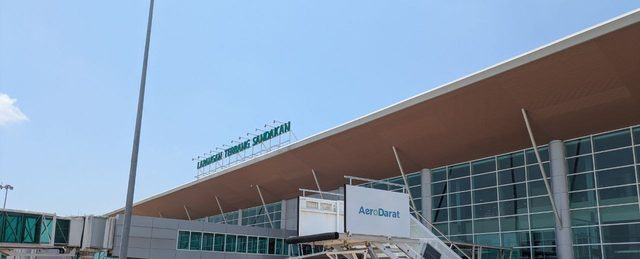
25.08.In Sandakan wird über die Treppe aufs Vorfeld ausgestiegen.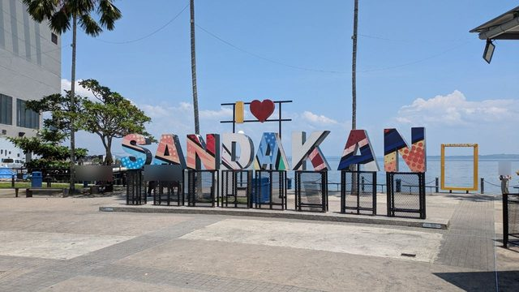
25.08.Der Schriftzug „I ♥ SANDAKAN" steht am Hafen, und man kommt nicht an ihn heran.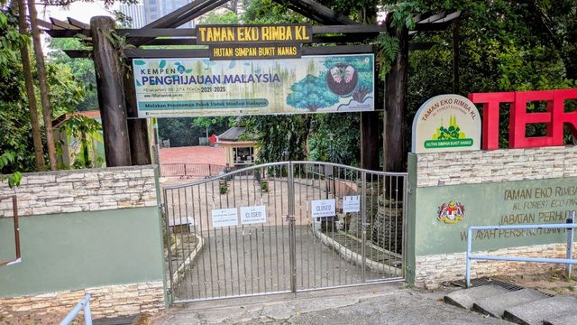
24.08.Der Waldpark Bukit Nanas hat abends zu, und sein Tor ist nicht das Tor zum Fernsehturm.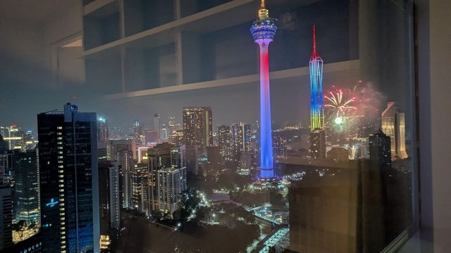
24.08.In der Woche vor Merdeka leuchten die Türme in den Landesfarben, und es gibt Feuerwerk ohne Anlass.- 24.08.Die Petronas Towers bekommt man nur mit Abstand ganz aufs Bild.
Was nicht funktioniert hat 2
Die Route
Acht Stationen zwischen Singapur und dem Norden Borneos. Die Anreise über Frankfurt und Bahrain liegt außerhalb des Ausschnitts. An den Stationen hängen die 67 selbst erlebten Einträge — ein zweiter Weg in den Text, über den Ort statt über das Thema.
Die Kartenbilder kommen von OpenStreetMap. Beim Laden erfährt openstreetmap.org Ihre IP-Adresse — deshalb erst auf Ihren Klick.
- Singapur215.–17.08. · 05.–07.09.
- Johor Bahru417.08. · Grenze und Larkin Sentral
- Mersing1417.–18.08. · Fährhafen nach Tioman
- Der Fernbus hält direkt am Fährterminal Plaza D'Jeti.
- Der Ort ist voller Katzen.
- Mitten im Ort steht ein tamilischer Tempel von 1892.
- Der Ortskern ist ein Dorf, kein Städtchen — Holzhäuser auf Stelzen, und der Dschungel steht am Straßenrand.
- „Dorf" trifft nur die halbe Wahrheit — gewohnt wird in Mersing auch in zweigeschossigen Wohnblöcken mit Spielplatz davor.
- Am Geldautomaten der BSN in Mersing kam Geld heraus, mit einer Reisekreditkarte und ohne Gebühr.
- RM500 waren es, und das ist knapper, als es klingt.
- Am Spätnachmittag spielt sich der Ort an der Strandpromenade ab.
- Und so sieht das aus (17.08., 18:20 Ortszeit).
- Kassiert wird nicht im Terminal, sondern in einem Büro in der Nähe der Anlegestelle.
- Erhoben wurde nur die Marine-Park-Gebühr.
- Die Wartehalle ist ein offener Pavillon, kein Gebäude.
- Eingestiegen wird vom Steg aus, direkt neben dem Rumpf.
- Ein Mamak-Stand in Mersing verlangt für ein volles Essen RM 6,50 bis RM 11,00, ein Frühstück kostet RM 3,50.
- Tioman2418.–21.08.
- RM800 sind es geworden, für vier Personen und drei Inseltage.
- Die Unterkunft steht direkt auf dem Sand.
- Die Bucht ist flach und ruhig, der Steg liegt am anderen Ende in Sichtweite.
- Die Unterkunft heißt Coral Reef Holiday Resort, und gefrühstückt wird auf dem Sand.
- Der Pancake zum Frühstück ist ein gerollter Crêpe mit Banane.
- Die Bucht ist nicht durchgehend Sand, und am späten Vormittag ist sie leer.
- Der Regenwald steht direkt hinter den Häusern von Tekek.
- Die Dorfstraße in Tekek ist ein Betonstreifen, und viel fährt darauf nicht.
- Am Ufer in Tekek steht eine Tafel, die die ganze Insel auf einen Blick sortiert.
- In den Nadelbäumen am Ufer von Tekek hängen Flughunde, und zwar zu Dutzenden.
- Im zollfreien Laden in Tekek steht Cognac in Drei-Liter-Flaschen — und der ist teurer als in Deutschland.
- Zwischen Baumaterial im Dorf liegt ein zerlegtes Kleinflugzeug.
- Eine weiße Katze mit zwei verschiedenfarbigen Augen.
- Fast alle Katzen hier haben einen kurzen, oft geknickten Schwanz.
- Der Weg nach Juara ist zum großen Teil gebaut.
- Am Weg steht ein gelbes Schild der Wildtierbehörde.
- Ein graues Rohr begleitet den Weg, und es trägt rote Farbmarken.
- Auf dem Weg lag ein Waran.
- Der Weg führt durch geschlossenen Wald, und ein Bach quert ihn.
- Ein blau schillernder Falter lag auf dem Waldboden.
- Juara empfängt mit einem gemauerten Torbogen über der Dorfstraße.
- In Juara steht eine Tafel zu den Flughunden — und sie bestätigt, was oben nur nachgeschlagen war.
- Juara liegt am offenen Meer, und das sieht man sofort.
- Benzin gibt es im Laden, in Flaschen, für RM 4,00.
- Kuala Lumpur2122.–24.08.
- Ins Zentrum geht es über eine Hochstraße, und der erste Turm ist nicht der, den man erwartet.
- Aus dem Fenster sieht man den Fernsehturm, nicht die Petronas Towers.
- Die Flagge hängt hier über die halbe Fassade.
- Die Petronas Towers stehen an einer ganz normalen Straße.
- Abends stehen die Türme hinter den Flaggen am Saloma.
- Die Green Line fährt die Einkaufszentren ab.
- Die App zum Bus heißt GOKL und kommt von der Stadtverwaltung.
- Von der Jalan Hang Kasturi steht Merdeka 118 am Ende der Straße.
- Die goldene Figur und die bunte Treppe bekommt man nur vom Vorplatz zusammen aufs Bild.
- Oben lohnt der Blick zurück mehr als die Treppe selbst.
- In der Höhle steht ein ganzer Tempel, und das Licht kommt von oben.
- Auf der Mauer am Weg laufen Makaken.
- In der Woche vor Merdeka leuchten die Türme in den Landesfarben, und es gibt Feuerwerk ohne Anlass.
- Die Petronas Towers bekommt man nur mit Abstand ganz aufs Bild.
- An der Bukit Bintang stehen die Einkaufszentren als Kette an derselben Kreuzung.
- Im Einkaufszentrum saß ein Falter von der Größe einer Hand.
- Im Teich des Parks hinter Suria KLCC stehen Skulpturen im Wasser.
- Am Fluss führt ein Steg durch die Innenstadt, ohne Verkehr und ohne Ampeln.
- Der Bahnsteig einer Hochbahn-Station ist ein kostenloser Aussichtsplatz, und abends fällt die Sonne genau hinein.
- Am Tor zur Petaling Street steht Merdeka 118 direkt hinter dem Dach.
- Der Waldpark Bukit Nanas hat abends zu, und sein Tor ist nicht das Tor zum Fernsehturm.
- Sandakan225.–28.08. · Sabah
- Kota Kinabalu29.08.–03.09.
- Kudat04.–05.09. · Tip of Borneo
Wie das Dokument zu lesen ist
Jeder Punkt trägt ein Zeichen. Das ist der wichtigste Teil des Dokuments:
- ✓ selbst erlebt — wir haben es gemacht, es hat so funktioniert. Datum dahinter.
- ○ vorher nachgeschlagen — aus einer belastbaren Quelle, aber wir haben es nicht selbst geprüft. Kann stimmen, kann veraltet sein.
- ✗ hat nicht funktioniert — damit es niemand zweimal versucht.
Ein Reisebericht, der beides vermischt, ist nichts wert: der Leser kann dann bei keinem einzigen Satz mehr sagen, ob dahinter eine Erfahrung steht oder eine Internetseite.
Unterwegs in Singapur
Von der Jalan Besar bis in die Gardens by the Bay: 33 Minuten, abends um sieben (16.08.). Gemessen zwischen „wir sind an der Jalan Besar" und „wir sind am Garten", also inklusive Weg zur Station und Fußweg am Ende. Mit der MRT, Downtown Line, sechs Stationen bis Bayfront.
Die Fahrtrichtung ist die Stolperstelle, und sie kostet den Anschluss. Die Downtown Line fährt einen Bogen: Bayfront (DT16) liegt geografisch südlich von Jalan Besar (DT22), der richtige Zug fährt aber Richtung Bukit Panjang, also scheinbar nach Norden. Auf den Bahnsteig gehört der Blick auf die Stationsnummern, nicht auf die Himmelsrichtung. Ab Bayfront: Ausgang B, Unterführung, dann Dragonfly Bridge oder Meadow Bridge.
Garden Rhapsody im Supertree Grove — kostenlos, ohne Ticket, und man steht einfach darunter (16.08.). Keine Absperrung, keine Reihen, kein Einlass: die Zuschauer verteilen sich auf dem Platz zwischen den Bäumen, viele legen sich flach hin, weil die Show nach oben spielt. Wer ein Foto will, braucht keinen bestimmten Platz — aber Abstand, denn ein Supertree füllt aus der Nähe das ganze Bild. Auf dem Weitwinkelfoto unten stehen etliche aufgespannte Schirme in der Menge; die Show läuft also auch bei Regen weiter. (Das ist vom Bild abgelesen, nicht von uns berichtet.)
Telegram 17.08. 09:39auf dieser Seite 17.08. 09:5011 Min


2 nachgeschlagene Notizen — nicht selbst geprüft
Die zweite Lichtshow heißt Spectra und liegt 800 Meter entfernt. Wasser, Licht und Laser, 20:00 und 21:00 an der Event Plaza am Marina Bay Sands, direkt am Stationsausgang; Garden Rhapsody läuft 19:45 und 20:45. Je 15 Minuten. An einem Abend gehen beide: 20:00 Spectra, zehn Minuten Fußweg, 20:45 Garden Rhapsody. Wir waren nur bei Garden Rhapsody — was hier zu Spectra steht, ist Recherche geblieben.
Vom Flughafen in die Stadt entscheidet das Gepäck, nicht der Preis. MRT S$2,20 pro Person (45–50 min, zwei Umstiege), Taxi S$25–45 inklusive S$6 Flughafenzuschlag, am Festpreisschalter ein Sechssitzer für S$75. Ein normales Taxi fasst vier Personen, aber keine vier Koffer für drei Wochen — dann sind es zwei Wagen oder ein Sechssitzer, und der reine Preisvergleich rät falsch.
Grenze Singapur → Malaysia
An einem Montagvormittag waren wir gegen 12:00 Ortszeit auf malaysischer Seite durch (17.08.). Losgefahren sind wir in Little India. Wie lange die Kontrolle selbst gedauert hat, ist nicht mitgeschrieben — die Erfahrung anderer ist, dass die Zeit fast vollständig für das Anstehen draufgeht und nicht für die Strecke; der Causeway ist gut einen Kilometer lang.
Telegram 17.08. 04:01auf dieser Seite 17.08. 05:46106 Min
In der Grenzhalle hängt die Wegweisung schon. Nach der Kontrolle steht man vor
Schildern ↑ JB Sentral. JB Sentral ist der Bahnhof direkt neben dem Grenzgebäude und der
Ort, von dem aus es weitergeht — Bus, Taxi, Zug, alles dort. Man muss niemanden fragen.
Telegram 17.08. 04:04auf dieser Seite 17.08. 05:46103 Min
Von JB Sentral nach Larkin fährt ein Bus, und der ist der einfachste Weg (17.08.). Larkin Sentral ist der Fernbusbahnhof, von dem es weiter ins Land geht — vom Grenzgebäude sind es rund 5 Kilometer. Der Bus ab JB Sentral nimmt kontaktlos Karte und Google Pay, siehe „Bezahlen“ weiter unten. Empfohlen wird einem meist ein Grab für etwa RM20; der Bus tut dasselbe für einen Bruchteil.
Telegram 17.08. 04:47auf dieser Seite 17.08. 05:4660 Min
5 nachgeschlagene Notizen — nicht selbst geprüft
Ein Grab lässt sich am Grenzgebäude selbst nicht bestellen. Der Abholpunkt wäre das Erdgeschoss von JB Sentral nebenan. Wer in der Halle die App aufmacht, findet keinen Wagen.
Zu Fuß über den Causeway ist auf malaysischer Seite verboten (RM300–2000, Schilder seit 04/2026). Singapur untersagt es nicht, aber man betritt die andere Seite — also keine Option, auch wenn es auf der Karte nach einem kurzen Weg aussieht.
Mit dem Auto durch bleibt die bequemste Variante mit Gepäck. Grab fährt seit dem
04.05.2026 mit eigener Lizenz über die Grenze (SG>JB (Beta) in der App, Vorlauf 6 Stunden
bis 7 Tage). Im Auto bleiben alle an beiden Kontrollen sitzen, die Pässe gehen durchs
Fenster, Fingerabdruck und Gesichtsscan im Wagen, das Gepäck bleibt im Kofferraum. Im Bus
steigt man zweimal mit allem Gepäck aus. Sechssitzer rund S$120 = 81 Euro von der Hoteltür
bis Larkin Sentral.
Die Malaysia Digital Arrival Card (MDAC) ist auch an der Landgrenze Pflicht. Für
Deutsche gibt es keine Ausnahme, kostenlos, frühestens 3 Tage vor Ankunft, nur über
imigresen-online.imi.gov.my/mdac/main — bezahlte Nachbauten ranken bei Google darüber,
also die Adresse eintippen statt auf ein Suchergebnis klicken. Nötig sind Pass,
Ankunftsdatum, die malaysische Unterkunftsadresse, E-Mail und Telefonnummer.
Die Falle beim Nachlesen: fast alle Treffer zu „MDAC Ausnahme" handeln von Singapurern
und lesen sich wie eine Entwarnung für alle.
Für Singapur gibt es dasselbe (SG Arrival Card), und sie gilt pro Einreise.
Wer wie wir zweimal einreist, braucht sie zweimal. Kostenlos, frühestens 3 Tage vorher,
nur eservices.ica.gov.sg/sgarrivalcard oder die MyICA-App.
Von der Grenze nach Mersing
Von der Grenze bis zum Fährterminal in Mersing: gut vier Stunden (17.08.). Gemessen zwischen „wir sind durch die Kontrolle" um 12:01 Ortszeit und dem Foto vom Fährterminal um 16:11 — darin steckt alles: der Weg nach Larkin, das Warten und die Fahrt. Wer die Fähre nach Tioman am selben Tag noch erreichen will, plant für diese Strecke einen halben Tag ein.
Telegram 17.08. 08:11auf dieser Seite 17.08. 08:177 Min
Der Fernbus hält direkt am Fährterminal Plaza D'Jeti (17.08.). Terminal, Ticketschalter, Läden und Busvorfahrt liegen auf demselben Platz; zwischen Aussteigen und Fährschalter liegt kein Umstieg und keine zweite Fahrt.
Mitte August hängt in Johor überall Flaggenschmuck (17.08.). Malaysische Flaggen und die Johor-Flagge an Zäunen, Masten und Hauswänden, auch in kleinen Orten. Der Nationalfeiertag Merdeka ist am 31. August, die Dekoration steht Wochen vorher — schöner Nebeneffekt für Fotos, und ein Hinweis darauf, dass Ende August mit vollen Straßen und Feiertagsverkehr zu rechnen ist.
In Mersing
Der Ort ist voller Katzen (17.08.). Jens' Meldung dazu bestand aus einem Satz: „Wir lieben die vielen Katzen." Auf den Fotos sind es drei verschiedene Tiere an drei Stellen im Ortskern, alle satt, keines auf der Flucht: eine schwarze im Schatten unter einem Marktwagen, eine rot-weiße quer über die Fliesen gestreckt und schlafend, eine schwarz-weiße, die im Vorbeigehen kurz herüberschaut. Das ist keine Ausnahme dieses Tages — es ist das, wonach eine malaysische Kleinstadt aussieht.
Telegram 17.08. 08:59auf dieser Seite 17.08. 09:1921 Min


Mitten im Ort steht ein tamilischer Tempel von 1892 (21.08.). Die Jahreszahl steht am Bau selbst: über dem Eingang, unter der tamilischen Zeile, „KUIL SRI SUBRAMANIAR (1892)". Wer Mersing für eine reine Fährstation hält, liegt damit rund 130 Jahre daneben. Der Turm ist über und über mit bemalten Figuren besetzt, und er steht nicht abseits, sondern an der Straße zwischen Wohnhäusern, Stromleitungen und geparkten Autos — im Ortskern läuft man fast zwangsläufig daran vorbei. Wir haben ihn von außen gesehen; ob und wann er offen ist, haben wir nicht geprüft.
Telegram 21.08. 11:10auf dieser Seite 21.08. 11:166 Min


Der Ortskern ist ein Dorf, kein Städtchen — Holzhäuser auf Stelzen, und der Dschungel steht am Straßenrand (22.08.). Auf dem Weg durch Mersing am frühen Morgen: ein graues Holzhaus auf Pfeilern hinter Kokospalmen, daneben eine hellblaue Kate mit rotem Ziegeldach und vergitterter Veranda, beides bewohnt und in Gebrauch, nicht hergerichtet. Zwischen den Grundstücken liegt Brachland mit hohem Gras, und wo die Straße aufhört, fängt ohne Übergang dichter Bewuchs an — Bäume, Lianen, kein Zaun dazwischen. Wer Mersing als Zwischenstopp bucht, sollte wissen, dass er in einem Dorf übernachtet und nicht in einer Kleinstadt mit Zentrum. Jens hat die Bilder ohne einen Satz dazu geschickt; was er dort gemacht hat, steht hier deshalb nicht.
Telegram 22.08. 00:11auf dieser Seite 22.08. 00:2616 Min


„Dorf" trifft nur die halbe Wahrheit — gewohnt wird in Mersing auch in zweigeschossigen Wohnblöcken mit Spielplatz davor (21.08.). Ein paar Straßen weiter stehen zwei baugleiche Wohnhäuser, cremefarben mit rotem Blechdach, Wäsche und Topfpflanzen auf den offenen Laubengängen, Autos darunter geparkt. Davor: gemähter Rasen, ein Betonkanal als Entwässerung, Zaun, Straßenlaternen — und an der nächsten Ecke ein Spielplatz mit gelb-blauen Geräten an einer asphaltierten Wohnstraße. Das ist keine gewachsene Kampung-Streusiedlung, sondern eine geplante und gepflegte Wohnsiedlung. Wer nur die Stelzenhäuser sieht, unterschätzt den Ort: Mersing hat beides nebeneinander, und der Wohnteil ist der größere. Auch diese Bilder kamen ohne Text.
Telegram 21.08. 11:09auf dieser Seite 22.08. 02:04895 Min


Streicheln ist hier harmlos — auf Borneo ist es das nicht, und zwar genau in dem Teil, den die wenigsten dafür halten. Die malaysische Halbinsel, also auch Johor und Mersing, gilt seit Juli 2013 als tollwutfrei; der letzte Fall beim Menschen war 1998. In Sarawak dagegen läuft seit 2017 ein Ausbruch, der bis heute Tote fordert: zwischen Januar und Mitte September 2025 wurden dort 13.894 Tierbisse gemeldet, und 59,7 % davon gingen auf Katzen zurück, nicht auf Hunde. Sabah — Sandakan, Kota Kinabalu, Kudat — gilt dagegen ebenfalls als tollwutfrei. Die beiden Staaten liegen auf derselben Insel und werden ständig verwechselt. Wer also auf Borneo eine Katze anfasst, sollte vorher wissen, in welchem der beiden er steht; und nach Biss oder Kratzer gilt überall dasselbe: sofort zum Arzt, nicht abwarten.
Am Geldautomaten der BSN in Mersing kam Geld heraus, mit einer Reisekreditkarte und ohne Gebühr (17.08.). Das ist die praktisch wichtigste Auskunft dieses Abschnitts, und sie widerspricht dem, was wir vorher angenommen hatten (siehe „Bezahlen"): weder wurde die Karte abgelehnt noch eine Fremdkartengebühr fällig — und ausgerechnet bei der Bank, von der wir hier abgeraten hatten. Wer eine Reisekreditkarte ohne Auslandsentgelt dabeihat, braucht für Mersing keine Wechselstube und muss sich in Johor Bahru nicht mit Bargeld eindecken.
Telegram 17.08. 08:59auf dieser Seite 17.08. 09:4041 Min
RM500 waren es, und das ist knapper, als es klingt (17.08.). Fest verplant sind davon RM165: RM105 Marine-Park-Gebühr am Fährschalter in Mersing und RM60 Touristensteuer in der Unterkunft auf Tioman. Bleiben RM335 für vier Personen und drei Inseltage — Frühstück ist in der Unterkunft enthalten, Bootsfahrten zwischen den Buchten und eine Schnorcheltour nicht. Wir hatten dafür vorher RM800–1.200 veranschlagt, allerdings geschätzt und ohne Quelle. Wer nicht darauf ankommen lassen will, hebt in Mersing nach, solange fünf Banken nebeneinander stehen; auf der Insel ist es genau einer, und ein Inselautomat kann leer sein.
Telegram 17.08. 09:36auf dieser Seite 17.08. 09:404 Min
RM800 sind es geworden, für vier Personen und drei Inseltage (21.08.). Unsere Schätzung von RM800–1.200 hat damit am unteren Ende gestimmt: RM267 am Tag für vier, rund 169 Euro für den ganzen Inselaufenthalt. Wichtiger als die Zahl ist, wofür sie gilt — auf Tioman nimmt fast kein Stand und kein kleines Lokal eine Karte, es ist der Ort dieser Reise mit dem höchsten Bargeldanteil. In Kuala Lumpur und Kota Kinabalu trägt die Karte den größten Teil. Wer die RM267 auf drei Wochen hochrechnet, hebt deutlich zu viel ab.
Telegram 21.08. 10:04auf dieser Seite 21.08. 10:118 Min
2 nachgeschlagene Notizen — nicht selbst geprüft
Mit einer gebührenfreien Karte lohnt Abheben auf Vorrat nicht. Das ist keine Erfahrung, sondern die Folgerung aus den beiden Haken darüber: kostet die Abhebung nichts, spart ein großer Betrag auch nichts — er bindet nur Bargeld, das man über eine Busfahrt und drei Städte trägt. Was die Rechnung kippt, ist nicht die Gebühr, sondern die Verfügbarkeit: vor einer Insel oder einer ländlichen Tour lieber einmal zu viel als einmal zu wenig.
Gebührenfrei heißt nicht zinsfrei. Bei vielen Kreditkarten ist eine Bargeldabhebung eine Barverfügung und wird ab dem Tag der Abhebung verzinst, auch wenn keine Gebühr anfällt — bei manchen Reisekarten ist beides erlassen, bei anderen nur die Gebühr. Das steht in den Kartenbedingungen, nicht am Automaten. Wir haben es für unsere Karte nicht nachgesehen; es ist der einzige Punkt in diesem Abschnitt, den wir nicht selbst geprüft haben.


Das auffällige leerstehende Gebäude im Ortskern war einmal ein Kino. Der Schriftzug über dem Eingang ist bis auf die Schatten der Buchstaben verschwunden, aber das letzte Wort endet erkennbar auf THEATRE, und der fensterlose Aufbau auf dem Dach ist der Turm, in dem bei alten Lichtspielhäusern die Technik saß. Den Namen gibt keine offene Quelle her. Eine Spur führt trotzdem weiter: In Mersing gibt es einen im Ort bekannten Nudelstand namens Mee Goreng Panggung Wayang — wörtlich „Kino-Nudeln" —, der der Überlieferung nach früher im Kino selbst stand; auf Google Maps zu finden als „Panggung Cafe Mersing". Ob es dieses Gebäude war, sagt das nicht.

Am Spätnachmittag spielt sich der Ort an der Strandpromenade ab (17.08.). Ein asphaltierter Weg zwischen Kokospalmen und Meer, Pavillons zum Sitzen, Spielgeräte, dahinter die Straße mit den Parkplätzen. Auf dem Foto gehen Familien spazieren, Kinder fahren Rad, an den Masten hängen schon die Flaggen für Merdeka. Wer in Mersing auf die Fähre wartet und nicht weiß, wohin: hierhin — es ist der Ort, an dem abends alle sind. (Vom Bild abgelesen, nicht von uns berichtet.)
Telegram 17.08. 10:21auf dieser Seite 17.08. 10:5837 Min

Von Mersing nach Tioman — der Ablauf vor dem Einsteigen
Eine Fähre ist kein Zug. Zwischen dem Terminal und dem Boot liegen mehrere Schalter, zwei davon nehmen ausschließlich Bargeld, und die Abfahrtszeit steht nicht im Fahrplan, sondern im Tidenkalender. Dieser Abschnitt ist am Vorabend geschrieben und deshalb durchgehend mit ○ gekennzeichnet — was davon morgen wirklich so war, steht am 18.08. hier.
Die Abfahrtszeit hängt an der Tide und wechselt jeden Tag. Das Hafenbecken von Mersing ist flach; die Fähre kann nur ablegen, wenn genug Wasser darunter ist. Im veröffentlichten Augustplan steht deshalb an jedem Tag etwas anderes: am 15.08. 08:30 und 13:00, am 16.08. nur 10:00, am 17.08. 10:30 und 15:00, am 18.08. 11:30. Wer die Abfahrtszeit aus einem Reiseführer oder von der Vorwoche übernimmt, plant an der Sache vorbei — und der Betreiber schreibt selbst dazu, der Plan könne sich ohne Ankündigung ändern. Der zweite Hafen, Tanjung Gemok (der alte Name Teluk Gading steht noch in vielen Buchungen), liegt 40 Kilometer nördlich und hat das Problem nicht, weil dort das Wasser tief genug ist. Beide Häfen fahren nach Tioman, aber nur einer steht auf dem eigenen Ticket.
Und so sieht das aus (17.08., 18:20 Ortszeit). Am Abend vor der Überfahrt lagen die kleinen Boote am gegenüberliegenden Ufer im Schlick, während die beiden großen Boote am Steg noch schwammen. Das ist kein Wetterschaden und kein schlechter Tag — das ist der normale Tidenhub, und es ist der Grund, warum die Abfahrtszeit in Mersing jeden Tag eine andere ist. Wer dieses Bild vor Augen hat, versteht den Fahrplan sofort.
Telegram 17.08. 10:21auf dieser Seite 17.08. 10:3817 Min

Am selben Kai sitzt das Jabatan Laut, die malaysische Seefahrtbehörde. Das Gebäude mit dem grünen Türmchen steht direkt an der Flussmündung. Für Reisende ist es kein Anlaufpunkt — es ist aber der Beleg dafür, dass hier nicht nur Ausflugsboote liegen: Mersing ist ein Arbeitshafen mit Fischerei, und der Fährbetrieb teilt sich das Wasser mit ihr.

Nacheinander abzuarbeiten sind drei Schalter, und die Reihenfolge ist vorgegeben.
- Fährschalter. Die Onlinebuchung wird gegen Bordkarten getauscht. Die Pässe aller Reisenden werden gescannt und registriert, es genügt nicht, dass einer für alle geht.
- Marine-Park-Schalter. Bar, gegen Vorlage der Fährtickets. Den Beleg aufheben: die Unterkünfte auf Tioman fragen beim Einchecken danach, und er gilt für den ganzen Aufenthalt.
- Schalter für die Johor-Gebühr. Eigener Schalter, eigener Betrag — am 18.08. wurde sie allerdings nicht erhoben, siehe unten.
Kassiert wird nicht im Terminal, sondern in einem Büro in der Nähe der Anlegestelle (18.08.). Jens hat es am Morgen der Überfahrt gemeldet: das Büro liegt abseits des Terminalgebäudes, davor steht ein Pavillon — daran ist es zu erkennen. Die Bordkarten gibt es also an der einen Stelle, gezahlt wird an der anderen. Das ist ein zusätzlicher Weg, und in unserer Planung weiter unten stand er nicht. Welche Gebühr dort verlangt wird, steht zwei Absätze weiter; der Betrag steht noch aus.
Telegram 18.08. 02:12auf dieser Seite 18.08. 02:165 Min
Die Gebühren — und die eine, bei der die Quellen auseinandergehen. Die Marine-Park-Gebühr ist unstrittig: Ausländer zahlen RM30 als Erwachsene und RM15 als Kind von 6 bis 12 Jahren, unter 6 frei, Senioren ab 60 ebenfalls RM15 (Sätze des malaysischen Fischereiministeriums). Für uns vier — drei Erwachsene, ein Zwölfjähriger — sind das RM105. Dazu kommt eine Johor-Nationalparkgebühr von RM20 für Erwachsene, die ausdrücklich nur bei Abfahrt ab Mersing erhoben wird, nicht ab Tanjung Gemok. Beim Kindersatz nennt eine Quelle RM5, eine andere RM10; für uns wären es also RM65 oder RM70. Und der Autor eines sehr ausführlichen Führers schreibt, er sei ihr in der Praxis nie begegnet. Das ist der Grund, sie trotzdem in bar dabeizuhaben: nicht erhoben zu werden kostet nichts, sie nicht dabeizuhaben kostet die Fähre.
Erhoben wurde nur die Marine-Park-Gebühr (18.08.). Damit ist die Frage entschieden, bei der die Quellen im Absatz darüber auseinandergehen: Im Büro an der Anlegestelle wurde allein die Marine-Park-Gebühr kassiert, kein zweiter Betrag und kein zweiter Schalter. Der Autor, der schrieb, er sei der Johor-Gebühr in der Praxis nie begegnet, behält also recht. Wir würden sie trotzdem weiter in bar dabeihaben — ein Dienstagvormittag im August widerlegt keine Gebührenordnung, er zeigt nur, dass an diesem Tag an dieser Stelle nicht kassiert wurde. Was die Marine-Park-Gebühr am Ende gekostet hat, steht hier, sobald es gemeldet ist.
Telegram 18.08. 02:19auf dieser Seite 18.08. 02:3920 Min
3 nachgeschlagene Notizen — nicht selbst geprüft
Beide Gebühren nur bar — und im Terminal steht kein Geldautomat. Die nächsten Bankautomaten sind 400 bis 494 Meter entfernt, also fünf bis sieben Minuten zu Fuß (aus den Koordinaten von OpenStreetMap gerechnet, nicht abgelaufen). Fünf Banken stehen dort nebeneinander, und für alle, die im Ortskern übernachten, dreht sich das Verhältnis um: von der Jalan Abu Bakar aus sind es zur Bank Simpanan Nasional 85 Meter und zur Public Bank 90 — das Geld holt man also vor dem Auschecken und nicht auf dem Weg zum Schiff. Kleine Scheine verlangen: die Kassen an den Gebührenschaltern haben wenig Wechselgeld.
Wann man dort sein muss. Die Ticket-Halle ist von 07:30 bis 20:00 geöffnet. Der Check-in beginnt eine Stunde vor Abfahrt, die Bordkarten gibt es je nach Andrang erst 30 Minuten vorher, und am Steg sollte man 30 Minuten vor Abfahrt stehen. Empfohlen werden 60 Minuten in ruhigen Zeiten und 90 in den Schulferien. Mehr als anderthalb Stunden bringen nichts, weil vorher niemand am Schalter sitzt.
Das Gepäck nimmt die Mannschaft beim Einsteigen ab und fragt, wo man aussteigt. Das Boot hält auf Tioman an mehreren Dörfern — Genting, Paya, Tekek, ABC, Salang. Wer den Namen seines Dorfes nicht sofort sagen kann, sucht sein Gepäck später in der falschen Bucht.
Die Wartehalle ist ein offener Pavillon, kein Gebäude (18.08.). Ein Ziegeldach auf Stützen, an den Seiten offen, Deckenventilatoren unter dem Dach, feste Stuhlreihen, zwei Bildschirme mit den Abfahrten. Klimaanlage gibt es hier nicht und kann es nicht geben — wer sich auf eine gekühlte Halle einstellt, wartet in der Mittagshitze falsch angezogen. Der Schatten ist das ganze Angebot, und er reicht.
Telegram 18.08. 03:32auf dieser Seite 18.08. 03:419 Min

Eingestiegen wird vom Steg aus, direkt neben dem Rumpf (18.08.). Die Schlange steht unter einem Vordach, jeder mit seinem Gepäck am Körper. Das Boot ist ein Katamaran, der Betreiber heißt Cataferry — der Name steht in großen Buchstaben an der Bordwand, und damit weiß man am Steg, ob man vor dem richtigen Boot steht.
Telegram 18.08. 03:32auf dieser Seite 18.08. 03:419 Min

Gefahren wird in einer geschlossenen Kabine, nicht an Deck (18.08.). Bestuhlung wie im Flugzeug, Bildschirme an der Trennwand, an der Wand eine Tafel mit den verbotenen Gegenständen. Vor dem Ablegen läuft ein Sicherheitsvideo mit den Schwimmwesten. Was man unterwegs braucht, gehört deshalb in die Tasche am Sitz und nicht in das Gepäck, das beim Einsteigen abgegeben wird. Um 11:32 Ortszeit saßen wir an Bord, geplant war die Abfahrt um 11:30 — die Zeiten aus der Tabelle unten haben bis zum Sitzplatz getragen.
Telegram 18.08. 03:32auf dieser Seite 18.08. 03:419 Min

Die Reihenfolge, die wir morgen früh gehen — Fähre 11:30.
| Zeit | Was |
|---|---|
| 09:00 | Geld holen, 85 Meter vom Haus, an dem Automaten, der gestern funktioniert hat. Kleine Scheine mitnehmen |
| 09:45 | Auschecken (bis 12:00 möglich, aber der Rest des Vormittags soll nicht daran hängen) |
| 10:00 | Am Terminal. Pässe griffbereit, Bordkarten holen |
| 10:20 | Ins Büro an der Anlegestelle, erkennbar am Pavillon davor: Marine-Park-Gebühr bar, Beleg zu den Pässen. Die Johor-Gebühr wurde nicht verlangt |
| 10:45 | Essen und Toilette — beides gibt es am Terminal, auf dem Boot nicht |
| 11:00 | Am Steg. Gepäck abgeben, Dorf nennen: Tekek |
| 11:30 | Ablegen |
Auf Tioman — was uns dort erwartet
Der Abschnitt entstand vor der Ankunft, deshalb steht darin fast überall ○. Was wir seit dem 18. August selbst gesehen haben, steht oben mit ✓; die ○-Sätze darunter warten weiter auf ihre Prüfung.
Die Unterkunft steht direkt auf dem Sand (18.08.). Kein Hotelgebäude, sondern eine Reihe weißer Häuschen nebeneinander, jedes mit eigener Tür zum Strand. Zwischen der letzten Stufe und dem Wasser liegen ein paar Schritte Sand und keine Straße. Vor den Türen liegen Kajaks für die Gäste, an einem Baum hängen handgemalte Schilder Richtung Frühstück und Dusche. Wer eine Lobby und einen Empfangstresen erwartet, sucht vergeblich: die Tür des Häuschens ist der Eingang.
Telegram 18.08. 06:56auf dieser Seite 18.08. 07:037 Min

Die Bucht ist flach und ruhig, der Steg liegt am anderen Ende in Sichtweite (18.08.). Helles Wasser ohne Wellen, klar bis weit hinaus, dahinter bewaldete Hügel bis ans Ufer. Am Wasserrand hängt eine Hängematte zwischen zwei Pfosten. Kurz vor 15 Uhr Ortszeit war der Strand leer. Am anderen Ende der Bucht steht ein langer Steg, davor ein paar Dächer — mehr ist von hier aus nicht zu erkennen.
Telegram 18.08. 06:56auf dieser Seite 18.08. 07:037 Min

Die Unterkunft heißt Coral Reef Holiday Resort, und gefrühstückt wird auf dem Sand (19.08.). Der Name stand bis jetzt als „Coral Beach oder so" hier — er ist damit geklärt. Die Tische stehen im Freien zwischen Palmen und Wasserlinie, weiße Decken, schwarze Plastikstühle, dazwischen ein Sonnenschirm. Hinter den Tischen liegt eine Reihe heller Felsblöcke als Uferschutz, dahinter das türkisfarbene Wasser der Bucht. Zum Frühstück gab es zwei hohe Gläser Fruchtgetränk, eines magentafarben aus Drachenfrucht, eines hellgelb. Ob sie im Preis enthalten sind oder extra bezahlt wurden, ist hier nicht gemessen — das Frühstück selbst ist laut Buchung enthalten.
Telegram 19.08. 03:26auf dieser Seite 19.08. 03:304 Min

Der Pancake zum Frühstück ist ein gerollter Crêpe mit Banane (19.08.). Kein Stapel amerikanischer Pfannkuchen, sondern ein dünner Teigfladen, zusammengerollt, mit Puderzucker bestäubt und mit drei Bananenscheiben belegt. Die Füllung ist hellbraun und grob; benennen lässt sie sich vom Bild nicht. Dazu Kaffee im Glasbecher und eine Flasche mit bernsteinfarbenem Sirup oder Honig auf dem Tisch. Herzhaftes liegt nicht dabei — kein Ei, kein Toast, kein Speck. Ob es das auf Nachfrage gibt, haben wir nicht gefragt.
Telegram 19.08. 03:48auf dieser Seite 19.08. 03:535 Min

Die Bucht ist nicht durchgehend Sand, und am späten Vormittag ist sie leer (19.08.). Ein Stück des Ufers ist mit einer Schüttung aus hellen Felsblöcken befestigt, mehrere Meter breit — wer den Strand als eine einzige Sandfläche erwartet, irrt sich an dieser Stelle. Daneben beginnt der Sand und läuft in einer flachen Kurve die Bucht entlang bis zu einer bewaldeten Landspitze, an der ein Pavillon mit orangem Ziegeldach auf gelb gestrichenen Pfosten steht. Weit draußen vor der Bucht liegt eine kleine bewaldete Felseninsel. Am Baumsaum liegt einiges im Sand: ein schwarzes Netz, ein alter Sack, eine helle Blechplatte — geharkt wird hier nichts. Um kurz vor zwölf Uhr Ortszeit war kein einziger Mensch am Strand.
Telegram 19.08. 03:48auf dieser Seite 19.08. 03:535 Min

Der Regenwald steht direkt hinter den Häusern von Tekek (18.08.). Hinter der Häuserzeile am Dorfrand steigt der Hang sofort an, dicht bewachsen bis zum Grat, und aus dem Blätterdach ragen einzelne hohe Bäume heraus. Zwischen dem letzten Dach und dem Wald liegt weder Feld noch Garten. Wer auf der Dorfstraße steht, hat auf der einen Seite Wellblechdächer und auf der anderen den Wald.
Telegram 18.08. 09:43auf dieser Seite 18.08. 10:0724 Min

Die Dorfstraße in Tekek ist ein Betonstreifen, und viel fährt darauf nicht (18.08.). Eine Fahrspur breit, an den Rändern orange-weiße Plastikbaken, dazwischen kleine Läden unter Blechdächern, ein blaues Pavillonzelt mit einer Kühltruhe davor und eine Brücke mit weißem Geländer. Unterwegs waren ein Roller, eine Ziege quer über die Fahrbahn und ein einzelner Pick-up mit Firmenaufkleber an der Tür. An Masten und Zäunen hängen Malaysia-Flaggen.
Telegram 18.08. 09:43auf dieser Seite 18.08. 10:0724 Min


Die Flaggen hängen wegen des Monats. Malaysia feiert am 31. August den Unabhängigkeitstag, Hari Merdeka; im ganzen August hängen Landes- und Bundesstaatsflaggen an Häusern, Zäunen und Straßenmasten. An diesem Tag sind wir in Kota Kinabalu.
Am Ufer in Tekek steht eine Tafel, die die ganze Insel auf einen Blick sortiert (18.08.). Blaues Gestell, seitlich in großen Buchstaben „Pulau Tioman", darin eine gezeichnete Karte mit einem Kasten pro Dorf. Tekek: Marina, Zentrum des Marine Parks, Golfplatz, der Dschungelpfad nach Juara quer über die Insel, dazu eine Seilrutsche am Keluang. Salang ganz im Norden: eine Walfels-Skulptur und der Waldweg von Panuba herüber. Juara auf der Ostseite, als einziges Dorf am offenen Meer: zwei Wasserfälle, ein Aussichtspunkt, eine Surfschule. Im Süden Nipah und Mukut: Höhle, Kajak, der Wasserfall von Asah und eine Via ferrata am Gunung Nenek Semukut. Zwischen den Dörfern liegen die Tauchinseln — Chebeh, Tulai, Labas, Sepoi, Soyak, Renggis, Jahat — jede mit Taucher- oder Schnorchelzeichen. Was davon stimmt, steht hier erst, wenn wir es selbst gesehen haben.
Telegram 18.08. 10:18auf dieser Seite 18.08. 10:246 Min

In den Nadelbäumen am Ufer von Tekek hängen Flughunde, und zwar zu Dutzenden (18.08.). Kurz vor halb sieben abends, gut eine Stunde vor Sonnenuntergang, hängen sie noch: dunkle Bündel an den dünnen Zweigen, kopfüber, jedes in seine eigenen Flughäute gewickelt, an manchen Ästen drei oder vier nebeneinander. In den vergrößerten Ausschnitten sind über sechzig einzeln zu zählen; wo sie dicht hängen, gehen sie ineinander über, die Kolonie ist also größer. Der Baumstreifen steht zwischen dem Betonweg und dem Sand, dahinter der Strand. Vom Weg aus sieht man sie erst, wenn man nach oben schaut — von unten sind es Schatten im Geäst.
Telegram 18.08. 10:30auf dieser Seite 18.08. 10:378 Min

3 nachgeschlagene Notizen — nicht selbst geprüft
Es sind Inselflughunde, und dieser Baumstreifen ist einer von nur zwei Schlafplätzen der ganzen Insel. Auf Tioman lebt Pteropus hypomelanus, der Inselflughund. Eine Zählung von März bis Oktober 2015 fand die Tiere an genau zwei Orten: in Tekek und in Juara. Ergebnis damals 675 bis 1.033 Tiere in Juara und 2.178 bis 5.385 auf der ganzen Insel — der größere Teil hängt also hier. Auf der internationalen Roten Liste gilt die Art als nicht gefährdet, auf der malaysischen als stark gefährdet, und der Bestand nimmt ab. Welche Art da hängt, ist nicht am Foto entschieden, sondern aus der Untersuchung übernommen (Aziz u.a., Human Ecology 2017).
Diese Tiere bestäuben Durian — nachgewiesen wurde das zum ersten Mal auf dieser Insel. In Juara, auf der anderen Seite von Tioman, hingen von April bis Juli 2015 neunzehn Kamerafallen in vier blühenden Durianbäumen. Die Flughunde trinken den Nektar, ohne die Blüte zu zerstören, und arbeiten oberhalb von sechs Metern, wo die kleineren Nektarfledermäuse nicht hinkommen. Die Bäume mit den meisten Flughund-Besuchen trugen reife Früchte, die mit wenigen nicht. Viele Bauern halten die Tiere für Schädlinge, weil sie in den Blüten sitzen; tatsächlich hängt die Ernte an ihnen (Aziz u.a., Ecology and Evolution 2017).
Einen Flughund nicht anfassen, auch keinen toten. Das ist die einzige Regel, die es braucht, und sie gilt für jede Fledermaus weltweit. Ansehen, fotografieren und darunter weitergehen ist unbedenklich.
Offen, kommt noch: was die Marine-Park-Gebühr am Fährschalter tatsächlich gekostet hat, ob der Beleg beim Einchecken verlangt wurde, und wie man vom Steg zur Unterkunft kommt — zu Fuß oder mit dem Boot.
2 nachgeschlagene Notizen — nicht selbst geprüft
Tekek ist das Dorf mit der Infrastruktur — und die ganze Insel hängt daran. Es gibt auf Tioman genau einen Geldautomaten, eine BSN, gleich um die Ecke vom Flugfeld in Tekek. Dazu kommen dort die Bank, eine kleine Klinik, die Polizei, eine Wechselstube, das Informationszentrum des Marine Parks und die großen zollfreien Läden. Wer in einer der anderen Buchten wohnt, nimmt für jede dieser Sachen ein Boot. Das ist der praktische Grund, in Tekek zu übernachten, und er hat mit dem Strand nichts zu tun.
„Tioman ist bargeldlos" stimmt — und hilft uns nicht. Die Insel hat am 7. August 2023 offiziell umgestellt: die BSN hat QR-Codes, Kartenterminals und Bankagenten (Ejen Bank BSN) in die Dörfer gebracht, und die Bank schreibt heute, fast jeder Einkauf laufe darüber. Die Wege dahinter sind aber malaysische — DuitNow QR, malaysische Debitkarte, Überweisung. Einen DuitNow-Code scannt man mit einer malaysischen Bank-App, nicht mit einer deutschen. Die eine Brücke, die es dafür gab, ist zu: die App My TouristPay, mit der Fremde ihre Visa oder Mastercard hinterlegen und damit DuitNow-Codes scannen konnten, wurde zum 31. Dezember 2024 eingestellt — Anleitungen dazu stehen weiter im Netz und lesen sich wie aktuell. Und die Alipay+-Kopplung verbindet nur asiatische Geldbörsen (AlipayHK, GCash, Kakao Pay, TrueMoney), keine europäischen. Für uns bleiben deshalb zwei Wege: Kartenterminals, wo es welche gibt, und der eine Geldautomat in Tekek. Wer die Schlagzeile liest und daraufhin weniger Bargeld einpackt, zieht genau den falschen Schluss.
Im zollfreien Laden in Tekek steht Cognac in Drei-Liter-Flaschen — und der ist teurer als in Deutschland (19.08.). Auf dem Verkaufstisch stehen drei Flaschen zu je drei Litern nebeneinander, dahinter Regale mit Johnnie Walker, Chivas, Dewar's und weiteren Martells. Die gelben Preisschilder tragen den Ladennamen Star Glory: Martell XO 3 l für 3.980 RM, Hennessy XO 3 l für 4.775 RM, Martell Cordon Bleu 3 l für 3.300 RM. Zum Kurs vom 18.08. (1 RM = 0,2128 €) sind das 847 €, 1.016 € und 702 €, also 282 €, 339 € und 234 € je Liter. Der deutsche Handel verlangt für dieselben drei Marken in der 0,7-Liter-Flasche 154 €, 178,50 € und 122,89 € — das sind 220 €, 255 € und 176 € je Liter. Die zollfreie Flasche ist damit 28 bis 33 Prozent teurer als dieselbe Marke zu Hause. Ein Vorbehalt gehört dazu: Drei-Liter-Flaschen sind auch in Deutschland ein Sonderformat mit eigenem Aufschlag, verglichen wird hier gegen die gängige 0,7-Liter-Größe. Die Richtung ändert das nicht.
Telegram 19.08. 08:21auf dieser Seite 19.08. 08:309 Min

6 nachgeschlagene Notizen — nicht selbst geprüft
Die Insel ist zollfrei, seit 2002 — mitnehmen darf man davon einen Liter pro Person. Alkohol, Tabak und Schokolade kosten dort weniger als auf dem Festland, genannt werden bis zu 50 Prozent; für Cognac stimmt das nicht, siehe oben. Der größte Laden steht in Tekek. Beim Zurückfahren aufs Festland gilt die malaysische Freimenge für die zollfreien Inseln: ein Liter Wein, Spirituosen oder Bier pro Person, dazu andere Waren bis 500 RM, und beides erst nach mindestens 48 Stunden auf der Insel. Diese Frage stand hier bis zum 19.08. als offen.
Eine Flasche bis nach Hause zu tragen heißt, drei Grenzen mit drei verschiedenen Freimengen zu passieren. Tioman → Festland: ein Liter pro Person. Malaysia → Singapur: gar keine Freimenge. Singapur gewährt die zollfreie Menge für Alkohol ausdrücklich nicht, wenn man vor der Einreise die malaysische Grenzkontrolle passiert hat — dann ist auf jeden Tropfen Zoll fällig, und die Befreiung von der Einfuhrsteuer gilt für Alkohol ohnehin nie. Singapur → Deutschland: ein Liter Spirituosen über 22 Prozent pro Person ab 17 Jahren; Kinder zählen nicht mit. Über der Freimenge rechnet der deutsche Zoll pauschal 6,80 € je Liter, aber nur bis zu einem Warenwert von 700 € pro Person — eine Flasche für 847 € liegt darüber und wird nach Tarif veranlagt, allein die Einfuhrumsatzsteuer von 19 Prozent sind dann über 160 €. Die Drei-Liter-Flasche ist an allen drei Grenzen zu groß.
Zwischen den Dörfern gibt es keine durchgehende Straße. Es bleiben drei Wege: zu Fuß auf den Küstenpfaden, mit dem Fahrrad, oder mit dem Seetaxi. Von Tekek nach ABC (Air Batang) sind es 3,5 Kilometer flacher Weg, etwa 30 Minuten; seit 2017 gibt es dafür eine Promenade, und sie läuft an einem geschützten Schnorchelgebiet entlang — Fische sieht man vom Weg aus. Das Seetaxi kostet nach ABC oder Salang RM25 bis RM30, über weitere Strecken bis RM60, gerechnet pro Person und verhandelbar. Kleine Boote nehmen kein Kartengerät mit.
Das Netz ist besser als der Ruf der Insel, aber nicht überall. Seit 2023 melden alle vier malaysischen Netze 4G in allen Dörfern, ein Seekabel liegt seit 2018 bis Tekek. Tioman bleibt trotzdem ein bewaldeter Bergrücken: hinter den Hügeln und in den abgelegenen Buchten gibt es Funklöcher, und die verschwinden nicht dadurch, dass die Abdeckung offiziell vollständig ist.
Die Rückfahrt läuft nach derselben Mechanik wie die Hinfahrt. Check-in eine Stunde vor Abfahrt, der Schalter schließt 30 Minuten vorher, Bordkarte gegen Pass, am Steg 30 Minuten vorher stehen. Tekek ist nur einer von fünf Anlegern auf der Insel; das Boot fährt die Buchten nacheinander ab, und eine Verspätung an einem Steg trifft alle danach. Die Tide, die den Fahrplan in Mersing jeden Tag verschiebt, verschiebt auch die Rückfahrt — einen Tag vorher nachfragen ist der Rat, den hier alle Quellen geben, und er kostet nichts.
Den Beleg der Marine-Park-Gebühr nicht in den Koffer packen. Er wird beim Einchecken in der Unterkunft verlangt und gilt für den ganzen Aufenthalt.
Zwischen Baumaterial im Dorf liegt ein zerlegtes Kleinflugzeug (19.08.). Weiß mit dunkelblauem Zierstreifen, am Heck der Schriftzug Cirrus, auf dem Rumpf das Kennzeichen 9M-ZWP — 9M steht für Malaysia. Die Kabine ist ausgeräumt, Türen und Seitenscheiben fehlen, die Kanzel steht noch, ein Flügel liegt abgebrochen daneben. Das Ganze ruht auf einem Stapel schwarzer Kunststoffrohre und Stahlträger, dahinter ein Baggerlader und ein Rohbau mit rotem Ziegeldach. Kein Zaun, kein Absperrband, kein Schild: es liegt da wie das übrige Baumaterial auch.
Telegram 19.08. 10:22auf dieser Seite 19.08. 10:3412 Min

2 nachgeschlagene Notizen — nicht selbst geprüft
Zu diesem Kennzeichen gibt es keinen öffentlichen Eintrag. Gesucht am 19.08. in den Unfalldatenbanken, in den Flugzeugregistern und in malaysischen Nachrichten auf Englisch und Malaiisch: 9M-ZWP taucht nirgends auf. Was mit der Maschine passiert ist, wann und wo, steht hier deshalb nicht. Beschrieben ist, was im Hof liegt — nicht, wie es dorthin kam.
Nach Tioman fliegt niemand mehr; die Fähre ist der einzige Weg auf die Insel und herunter. Der Flugplatz liegt mitten in Tekek und hat eine Bahn von 992 Metern (02/20). Weil im Süden Hügel stehen, wird nur aus einer Richtung angeflogen — deshalb gilt die Bahn als eine der anspruchsvollsten in der Region. Berjaya Air flog sie bis 2014 von Singapur-Seletar und Kuala Lumpur-Subang an. Der letzte Anbieter, SKS Airways, setzte die Flüge nach Tioman und Redang im November 2023 aus, verlor im Oktober 2024 die Betriebserlaubnis und stellte am 16. Januar 2025 endgültig ein. Für die Reiseplanung heißt das: es gibt keinen Ausweichweg. Wer die Fähre verpasst, wartet auf die nächste Fähre.
Eine weiße Katze mit zwei verschiedenfarbigen Augen (19.08.). Ein Auge blau, das andere bernsteinfarben, dazu ein blaues Halsband mit Glöckchen — sie gehört jemandem und liegt ausgestreckt auf dem Kunstrasen. Nach den drei Katzen in Mersing die vierte auf dieser Reise, und die erste, die niemandem ausweicht.
Telegram 19.08. 10:22auf dieser Seite 19.08. 10:3412 Min

Zwei verschiedene Augenfarben bei einer weißen Katze heißen meistens: taub auf der blauen Seite. Beides hängt am selben Erbgang. Von weißen Katzen mit zwei blauen Augen sind 60 bis 80 Prozent taub, mit zwei andersfarbigen 10 bis 20 Prozent, und bei einem blauen Auge 30 bis 40 Prozent — dann fast immer nur auf dem Ohr der blauen Seite (Zahlen aus dem englischsprachigen Wikipedia-Artikel Odd-eyed cat, dort belegt mit Richards, ASPCA Complete Guide to Cats, 1999). Praktisch heißt das: sich von vorn nähern und nicht von der blauen Seite ansprechen. Ob dieses Tier hört, ist damit nicht gesagt, nur die Wahrscheinlichkeit.
Fast alle Katzen hier haben einen kurzen, oft geknickten Schwanz (20.08.). Nicht eine einzelne, sondern das Übliche — halbe Länge, viele mit einem Knoten am Ende.
Telegram 20.08. 00:50auf dieser Seite 20.08. 01:3343 Min
Die Schwänze sind nicht gekürzt, sie wachsen so. Ein Erbmerkmal, kein Eingriff — das ist die Auskunft, die man hier braucht, denn der erste Gedanke beim Hinsehen ist ein anderer. Darwin beschrieb es 1868 für den malaiischen Archipel, Siam, Pegu und Burma: Schwänze von etwa halber Länge, oft mit einem Knoten am Ende. Das Merkmal ist also mindestens 160 Jahre alt. Die Ursache wurde 2016 gefunden, eine Punktmutation im Gen HES7, das beim Embryo die Wirbel anlegt; geprüft an 245 Katzen, und sie steckt in den Straßenkatzen Südost- und Ostasiens genauso wie in der japanischen Bobtail-Rasse (Scientific Reports 6:31583, nature.com/articles/srep31583). Der Knick sind verwachsene Schwanzwirbel und tut dem Tier nichts. Häufig ist es hier, weil die Katzen sich frei vermehren, niemand dagegen züchtet und das Merkmal dominant ist — ein Elternteil genügt. Erzählt wird dazu auch eine Legende, eine Prinzessin habe beim Baden ihre Ringe auf den Katzenschwanz gesteckt und die Katze ihn eingeknickt, damit nichts herunterfällt. Erklärt nichts, hört man aber gern.
Der Weg nach Juara ist zum großen Teil gebaut (20.08.). Die Tafel in Tekek nennt ihn Dschungelpfad; unter den Schuhen sind es drei verschiedene Untergründe. Über weite Strecken eine schmale Betonpiste mit eingekämmtem Fischgrätenmuster, gerade breit genug für einen Roller, an den Rändern vom Grün überwachsen. Wo es steil wird, löst eine Treppe aus Betonstufen sie ab, moosbewachsen, voller Laub, mannsbreit zwischen dem Unterholz. Dazwischen liegt festgetretene Erde mit Wurzeln und Steinen. Auf der Höhe öffnet sich der Bewuchs und gibt den Blick über das Blätterdach bis aufs Meer frei. Was hier nicht steht, weil es nicht gemessen wurde: wie lange der Weg dauert und wie viele Höhenmeter er hat.
Telegram 20.08. 06:23auf dieser Seite 20.08. 06:3715 Min


Am Weg steht ein gelbes Schild der Wildtierbehörde (20.08.). Zwei Stahlrohre, ein gelbes Blech, oben das Staatswappen Malaysias, rechts das Zeichen von PERHILITAN. Der Text lautet „RHL TIOMAN IALAH KAWASAN PERLINDUNGAN — DILARANG MASUK TANPA KEBENARAN", unten „Arahan Ketua Pengarah Jabatan PERHILITAN". Übersetzt: RHL Tioman ist ein Schutzgebiet, Zutritt ohne Genehmigung verboten, auf Anordnung des Generaldirektors der Wildtierbehörde. RHL steht für Rezab Hidupan Liar, Wildschutzgebiet. Es ist eine Gebietsgrenze, kein Wegweiser: ob sich das Verbot auf den Weg selbst bezieht oder auf den Wald daneben, steht nicht darauf. Der Weg nach Juara ist begehbar und wird begangen.
Telegram 20.08. 02:43auf dieser Seite 20.08. 06:37235 Min

Ein graues Rohr begleitet den Weg, und es trägt rote Farbmarken (20.08.). Armdick, hellgrau, auf Betonböcken über dem Waldboden, in Abständen verschraubt, an manchen Stellen mit roter Farbe bespritzt. Es läuft in derselben Richtung wie der Weg den Hang hinunter und ist auch dort noch zu sehen, wo der Pfad zwischen Laub und Wurzeln undeutlich wird. Als Orientierung taugt es besser als jede Markierung an den Bäumen, weil es nicht verwittert und nicht überwächst.
Telegram 20.08. 06:23auf dieser Seite 20.08. 06:3715 Min

Was das Rohr führt, ist hier nicht entschieden. Auf den Bildern ist ein Druckrohr auf Auflagern zu sehen, mit Muffen und Schellen — das spricht für eine Wasserleitung vom Berg ins Dorf. Ein Stromkabel wäre die zweite Möglichkeit. Nichts am Rohr sagt es, kein Schild steht dabei, und auf dem Foto steht kein Betreiber. Wer es wissen will, fragt im Dorf.
Auf dem Weg lag ein Waran (20.08.). Grau-braun gekörnte Haut, kräftige Krallen, der Schwanz zum Hang hin ausgestreckt, den Kopf zur Seite — er lag auf der festgetretenen Erde zwischen ingwerartigen Blättern und rührte sich nicht, als der Weg an ihm vorbeiführte. Vom Kopf bis zum sichtbaren Schwanzansatz nimmt er gut die halbe Wegbreite ein.
Telegram 20.08. 06:23auf dieser Seite 20.08. 06:3715 Min

Welche Art das ist, steht hier nicht. Auf der malaysischen Halbinsel und ihren Inseln ist der Bindenwaran (Varanus salvator) der mit Abstand häufigste, und er wird auf Tioman regelmäßig gemeldet. Zu sehen ist auf dem Bild aber nur ein Waran, kein Bestimmungsmerkmal. Praktisch ändert das nichts: stehenbleiben, Abstand lassen, weitergehen. Warane greifen niemanden an, sie laufen weg, wenn man ihnen den Weg lässt.
Der Weg führt durch geschlossenen Wald, und ein Bach quert ihn (20.08.). Klares, kaum strömendes Wasser über hellem Grund, darüber hängen Palmwedel bis auf die Oberfläche, dahinter liegt ein Stamm quer im Wasser. Weiter oben steht der Wald dicht bis über den Weg: Kletterpflanzen mit handtellergroßen Blättern überziehen alles bis in Kopfhöhe, und aus dem Dach ragen einzelne sehr hohe Bäume mit hellem, geradem Stamm und kleiner Krone heraus. Der Wald ist nicht offen wie ein Park, sondern eine Wand, in die der Weg eine Kerbe schneidet.
Telegram 20.08. 06:23auf dieser Seite 20.08. 06:3715 Min


Ein blau schillernder Falter lag auf dem Waldboden (20.08.). Die Flügel offen im feuchten Erdreich zwischen Zweigen und Laub, die Oberseite an den Rändern dunkelbraun, in der Mitte leuchtend blau — kein Farbstoff, sondern ein Schiller, der aus dem Halbdunkel heraussticht. Der Falter ist beschädigt, ein Flügelrand fehlt, und er bewegte sich nicht.
Telegram 20.08. 06:23auf dieser Seite 20.08. 06:3715 Min

Juara empfängt mit einem gemauerten Torbogen über der Dorfstraße (20.08.). Zwei Pfeiler mit brauner Bruchstein-Verkleidung, dazwischen ein weißer Bogen: „WELCOME TO JUARA VILLAGE — PULAU TIOMAN". Dahinter beginnt eine Betonstraße zwischen blau und rot gestrichenen Flachbauten mit roten Ziegeldächern. Am Straßenrand stehen Pick-ups, ein Motorrad mit Anhänger, eine Schubkarre und Sandsäcke: hier wird gebaut. Wer aus dem Wald kommt, steht ohne Übergang mitten im Dorf.
Telegram 20.08. 06:23auf dieser Seite 20.08. 06:3715 Min

In Juara steht eine Tafel zu den Flughunden — und sie bestätigt, was oben nur nachgeschlagen war (20.08.). Weißes Blech am Ortseingang, darauf ein Flughund mit ausgebreiteten Flügeln in Lebensgröße und die Überschrift „ISLAND FLYING FOX — Pteropus hypomelanus — Keluang Kecil". Die Kästen darauf sagen: Gardeners of our forest — die Tiere fressen Früchte, Nektar und Blätter, sie sind Hauptbestäuber der Durian und verbreiten Feigensamen. Threatened by hunting and habitat loss — geschützte Art, Fangen, Töten und Belästigen ist verboten, Wildlife Conservation Act 2010 (Act 716). Admire from a distance — nicht unter den Schlafbäumen stehen, nichts anfassen. Living safely with bats — ein Nebeneinander ist gefahrlos möglich, solange man keinen direkten Kontakt sucht. You can be a flying fox guardian — wer einen Fang- oder Tötungsversuch sieht, ruft die PERHILITAN-Hotline 1800-88-5151; auf der Insel patrouillieren Wildhüter. Unten steht der Urheber: „a project under Rimba", mit Unterstützung unter anderem von Rufford und Mandai Nature.
Telegram 20.08. 06:23auf dieser Seite 20.08. 06:3715 Min

Die Tafel und die Untersuchung sind dieselbe Quelle. Die Zahlen weiter oben — zwei Schlafplätze auf der Insel, Tekek und Juara, und der erste Nachweis, dass Flughunde Durian bestäuben — stammen aus Arbeiten von Sheema Abdul Aziz und Kollegen; Rimba ist die Forschungsgruppe, in der sie arbeiten, und die Kamerafallen von 2015 hingen in Juara. Auf der Tafel steht damit dieselbe Handschrift, die die Studien geschrieben hat, an dem Ort, an dem gemessen wurde. Für uns heißt das: die Art, die Bestäubung und das Berührungsverbot sind nicht mehr nur nachgeschlagen, sie stehen vor Ort auf einem behördlich gedeckten Schild.
Juara liegt am offenen Meer, und das sieht man sofort (20.08.). Anders als die flache, spiegelglatte Bucht von Tekek: hier läuft eine Brandung in mehreren Reihen auf den Strand, das Wasser ist an der Kante grau-grün statt türkis, und der Sand fällt in einer breiten, harten Stufe zum Wasser ab. Die Bucht ist lang und leicht gebogen, an beiden Enden schließt sie mit bewaldeten Landzungen ab, die bis ans Wasser reichen. Hinter der Palmenreihe stehen einzelne Häuser und ein langes Restaurant mit Holzterrasse und Sonnenschirmen, davor liegen Boote im Sand. Am Südende liegen Schnellboote vor der Landzunge. Um die Mittagszeit lag genau ein Mensch am Strand.
Telegram 20.08. 06:23auf dieser Seite 20.08. 06:3715 Min


Benzin gibt es im Laden, in Flaschen, für RM 4,00 (20.08.). Keine Säule, kein Zapfhahn: Auf dem Fliesenboden steht eine hellblaue Plastikkiste, darin rund zwanzig gebrauchte Plastikflaschen mit gelblichem Sprit, jede mit einem anderen Schraubdeckel. Vorn hängt ein Stück Karton an zwei lila Schleifen, mit der Hand beschriftet: „PETROL RM 4.00". Dahinter stehen drei blaue Kanister mit dem Aufdruck „JM PETROL", auf einem sitzt oben ein Messinghahn — daraus wird abgefüllt. Zwischen den Benzinflaschen steht eine Wasserflasche, daneben stapeln sich Plastikschüsseln und ein Hocker. Es ist ein gewöhnlicher Dorfladen, kein Treibstoffhandel.
Telegram 20.08. 07:19auf dieser Seite 20.08. 07:246 Min

3 nachgeschlagene Notizen — nicht selbst geprüft
Eine Tankstelle gibt es auf Tioman nicht — das ist der Weg an Benzin. „There aren't even any petrol kiosks here in Tioman – you get fuel from the minimarts in plastic bottles", schreibt ein Reisebericht über eine Radtour von Tekek nach Air Batang (theoccasionaltraveller.com/tioman-cycling). Wer hier einen Roller mietet, kauft seinen Sprit im Laden, nicht an der Straße.
Auf dem Schild steht keine Menge, üblich ist RM 4,00 für einen Liter. Malaysiakini hat den Handel am 30.09.2025 beschrieben und nennt dieselben Preise: 500 ml für RM 2, ein Liter für RM 4 — und als Orte ausdrücklich Pulau Tioman, Pulau Tuba und Pulau Perhentian (malaysiakini.com/news/756524). Verkauft wird an Einheimische, die im Dorf unterwegs sind; im Artikel steht der Satz von den älteren Leuten, die mit dem Motorrad zur Moschee, ins Kaffeehaus oder in den Garten fahren. Auf dem Foto ist die Menge nicht zu sehen, die Flaschen haben verschiedene Größen.
Für uns ist die Flasche kaum teurer als eine Zapfsäule auf dem Festland. In der Woche vom 13. bis 19.08.2026 kostete RON95 an der Säule RM 1,99 für Malaysier — mit MyKad, über das Programm BUDI95 — und RM 3,62 für alle anderen, also für Ausländer (paultan.org/fuel-price). Der Liter aus der Flasche kostet einen Einheimischen damit das Doppelte, uns rund zehn Prozent mehr als eine Tankfüllung drüben. Der Aufschlag, über den auf der Insel geklagt wird, trifft nicht den Reisenden, sondern den, der hier wohnt.
Von Mersing nach Kuala Lumpur
Auf dem Bus steht ein zweiter Firmenname, und der ist thailändisch (22.08.). Gebucht ist Sanwa Express, und „Sanwa" steht auch groß auf der roten Flanke. Darüber, klein und in thailändischer Schrift: ซี.ไอ.เอ็น.ทัวร์ หาดใหญ่ — „C.I.N. Tour, Hat Yai" — dazu eine thailändische Mobilnummer. An einem malaysischen Fernbus kann also mehr als ein Name stehen. Wer seinen Wagen sucht, geht besser nach dem Ziel an der Frontscheibe und nach der Bordkarte als nach dem Schriftzug auf der Seite.
Telegram 22.08. 06:07auf dieser Seite 22.08. 06:2114 Min

Die Pause ist eine gewöhnliche Tankstelle an der Landstraße (22.08.). Kein Rasthof mit Food Court und Ständen: ein weißes Vordach über den Zapfsäulen, ein Laden an der Seite, ringsum Beton, und dahinter fangen sofort Ölpalmen und Wald an. Der Bus tankt in der Pause selbst, die Gepäckklappe steht dabei offen. Wer aussteigt, hat den Vorplatz und den Laden — mehr ist an dieser Stelle nicht.
Telegram 22.08. 06:07auf dieser Seite 22.08. 06:2114 Min

Die Strecke führt zuerst die Küstenstraße nach Norden (22.08.). Am Straßenrand steht ein Wegweiser: nach links „Kuantan / Segamat", nach rechts „T. Gemok / K. Rompin", darunter auf Grün Feuerwehr, Moschee und Krankenhaus. Tanjung Gemok und Kuala Rompin liegen beide nördlich von Mersing — der Bus nach Kuala Lumpur fährt also nicht auf direktem Weg landeinwärts, sondern erst an der Küste hinauf. Für alle, deren Fährticket auf Tanjung Gemok lautet und nicht auf Mersing, ist das die praktische Auskunft: Die Abzweigung dorthin liegt an dieser Strecke. (Vom Bild abgelesen, nicht von uns berichtet.)
Telegram 22.08. 06:07auf dieser Seite 22.08. 06:2114 Min

Neun Tage vor Merdeka hängen die Flaggen auch an den Booten (22.08.). An einem Flusshafen unterwegs liegen Fischerboote und Schnellboote dicht nebeneinander, und über die ganze Länge der Aufbauten sind Leinen mit malaysischen Flaggen gespannt, Dutzende auf jedem Boot. Am Ufer stehen weiße Zelte, davor stecken junge Mangroven im Schlick. Auf dem Steuerhaus eines blau-gelben Fischerboots hängt eine große Flagge flach an der Wand. Dasselbe Bild wie an den Zäunen in Johor und an den Masten der Strandpromenade von Mersing, nur eben auf dem Wasser. Wo genau das war, steht hier nicht — Jens hat die Bilder ohne Ortsangabe geschickt.
Telegram 22.08. 06:07auf dieser Seite 22.08. 06:2114 Min


In Kuala Lumpur
Ins Zentrum geht es über eine Hochstraße, und der erste Turm ist nicht der, den man erwartet (22.08.). Die letzte Etappe läuft auf einer Betontrasse über die Dächer: rechts die leere Fahrbahn mit Leitplanke, links eine Wand aus Wohntürmen, dazwischen Rohbauten, grüne Netze und Kräne. Ganz hinten im Dunst steht eine schmale Nadel — Merdeka 118. Die Petronas Towers sieht man von dieser Seite gar nicht. (Aus dem Auto fotografiert, unten rechts steht der Seitenspiegel im Bild.)
Telegram 22.08. 11:52auf dieser Seite 22.08. 12:019 Min

Aus dem Fenster sieht man den Fernsehturm, nicht die Petronas Towers (22.08.). Die Wohnung liegt hoch genug, dass der Blick über die Dächer geht: in der Mitte der Menara Kuala Lumpur mit seinem Kranz, rechts daneben wieder Merdeka 118, davor ein Teppich aus Bürotürmen und Baustellen bis zum Horizont. Nach der anderen Seite fällt der Blick fast senkrecht auf zwei Hotelhochhäuser mit einer Poollandschaft dazwischen — und auf eine Bahnstation mit geschwungenem Dach, in die von oben ein Gleis auf Stelzen hineinläuft. Wer eine Unterkunft an der Jalan Sultan Ismail sucht: die Aussicht zeigt hier die halbe Stadt, aber nicht das Wahrzeichen.
Telegram 22.08. 11:52auf dieser Seite 22.08. 12:019 Min


Die Flagge hängt hier über die halbe Fassade (22.08.). Was an den Booten und Zäunen im Süden in Reihen gespannt war, ist in der Stadt eine einzige, riesige Flagge: an einem Bankhochhaus hängt sie über gut zehn Stockwerke glatt an der Glasfront herunter, oben das Firmenschild, unten die Straße mit Bussen und Baustellenzäunen. An den Laternenmasten daneben stecken kleine Fahnen im Dutzend. Neun Tage vor dem 31. August ist das in Kuala Lumpur kein Schmuck mehr, sondern das Straßenbild.
Telegram 22.08. 11:52auf dieser Seite 22.08. 12:019 Min

Die Petronas Towers stehen an einer ganz normalen Straße (22.08.). Kein Vorplatz, keine Freitreppe: Wer von der Jalan Sultan Ismail kommt, hat die Türme plötzlich schräg über sich, zwischen Straßenlaternen, einem Strommast und den Ästen eines Baumes. Die Skybridge in der Mitte ist von unten gut zu sehen. Ein paar Schritte weiter beginnt der Verkehr vor dem Suria KLCC — sechs Spuren, Reisebusse am Bordstein, Palmen im Mittelstreifen. Der Blick, den man von Fotos kennt, ist die Ausnahme; im Alltag stehen die Türme im Feierabendverkehr.
Telegram 22.08. 11:52auf dieser Seite 22.08. 12:019 Min

Abends stehen die Türme hinter den Flaggen am Saloma (22.08.). Vor dem beleuchteten Schriftzug „Saloma Kuala Lumpur" hängt eine Reihe malaysischer Flaggen an schrägen Masten, und genau dahinter, über dem Ziegeldach des flachen Vorbaus, stehen die beiden Türme angestrahlt im Nachthimmel. Man muss dafür nichts bezahlen und nirgends anstehen — die Stelle liegt an der Straße.
Telegram 22.08. 11:52auf dieser Seite 22.08. 12:019 Min

2 nachgeschlagene Notizen — nicht selbst geprüft
Der GoKL-Stadtbus ist für Ausländer nicht mehr kostenlos, und bar geht gar nicht. Fast jeder Reiseführer nennt ihn gratis. Das gilt seit dem 1. Januar 2024 nur noch für Malaysier mit registrierter MyKad; Ausländer zahlen RM1 pro Fahrt, Kinder bis 12 fahren frei. Bezahlt wird ausschließlich bargeldlos — Touch'n'Go, QR-Code oder kontaktlose Kredit- bzw. Debitkarte, also dieselbe Karte, die im Bus von JB Sentral nach Larkin funktioniert hat. Zu viert sind das RM4 pro Strecke, damit ist der Preisvorteil gegenüber einem Grab klein. Quelle: DBKL, gelesen im August 2026. Es gibt Seiten, die weiterhin „no charge" schreiben — die sind veraltet.
Die Linie, die Besucher brauchen, hält an der Jalan Sultan Ismail. Von den 15 GoKL-Linien sind für den Stadtkern vier gedacht. Die Green Line (GOKL-01) fährt einen Ring ab Suria KLCC über die Jalan Ampang in die Jalan Sultan Ismail und weiter nach Bukit Bintang; ihre Halte heißen dort nach den Häusern an der Straße — „Renaissance Hotel" an der Kreuzung mit der Jalan Ampang, danach „Hotel Concorde" und „Life Centre". Die Blue Line (GOKL-04) kommt von Titiwangsa und hält an der Monorail-Station Bukit Nanas mitten auf der Jalan Sultan Ismail sowie an der LRT-Station Dang Wangi. Beide fahren täglich 06:00 bis 23:00, alle 5 bis 15 Minuten. Wer an der Jalan Sultan Ismail wohnt, hat den nächsten Halt in rund 300 Metern. In Google Maps sind die Linien als „Rapid KL Bus" beschriftet, nicht als GoKL.
Die Green Line fährt die Einkaufszentren ab (23.08.). Sie verbindet Suria KLCC am Fuß der Petronas-Türme mit dem Pavilion in Bukit Bintang, und dazwischen liegen Platinum Park, Grand Hyatt und Life Centre. Wer in Kuala Lumpur einkaufen will, braucht deshalb keine zweite Linie: die beiden Adressen, die in jedem Reiseführer stehen, hängen an einem einzigen Ring.
Telegram 23.08. 08:46auf dieser Seite 23.08. 09:1226 Min
3 nachgeschlagene Notizen — nicht selbst geprüft
In die Altstadt kommt man mit der Purple Line, nicht mit der Green Line. Die Purple Line (GOKL-02) ist ein eigener Ring zwischen Bukit Bintang und dem Hab Pasar Seni: 16 Halte, eine Runde dauert rund 14 Minuten, Betrieb täglich von 06:00 bis 23:00, samstags und sonntags ab 07:00. Für Besucher zählen vier Halte — Central Market (Timur), Kota Raya am Rand von Chinatown, das Muzium Telekom und KL Tower (Selatan). Eingestiegen wird in Bukit Bintang am Bintang Walk oder an der MRT-Station Bukit Bintang, dort heißt der Halt „HSBC"; das ist dieselbe Ecke, an der auch die Green Line hält. Merdeka Square, die Masjid Negara und das Nationalmuseum liegen nicht an dieser Linie, sondern an der Red Line (GOKL-03).
Telegram 23.08. 08:46auf dieser Seite 23.08. 09:1226 Min
Alle GoKL-Linien sind Einbahn-Ringe — der nächste Halt ist oft der falsche. Auf einer Ringlinie fährt der Bus nur in eine Richtung, und das entscheidet, welchen Halt man nimmt. Wer an der Jalan Sultan Ismail wohnt, hat die Monorail-Station Bukit Nanas mit rund 270 Metern am nächsten — die Blue Line passiert sie aber auf dem Rückweg: von dort nach Bukit Bintang fährt sie erst über Sogo, Chow Kit, Titiwangsa und Kampung Baru, also fast einmal komplett herum, rund 20 Halte. Der Blue-Halt in Richtung Bukit Bintang heißt „Hotel Concorde" und liegt 450 Meter entfernt. Die Green Line hat das Problem kaum: Ihr Ring ist klein, ab „Renaissance Hotel" sind es vier Halte bis Pavilion, und wer sitzen bleibt, kommt über Suria KLCC an den Petronas-Türmen wieder am Ausgangspunkt vorbei. Deshalb ist sie für Besucher die brauchbarere der beiden, obwohl der Blue-Halt näher liegt.
Die Farbe steht nicht am Bus — GoKL erkennt man nur an der Nummer. Die vier Stadtlinien heißen Green, Purple, Red und Blue, aber seit dem 1. August 2023 führt DBKL sie offiziell unter Nummern: GOKL 01 bis 04, die Farbe hängt nur noch als Zusatz am Namen. Die ganze Flotte ist grün-türkis lackiert, alle vier Linien sehen von außen gleich aus. Wer am Halt auf einen grünen Bus wartet, wartet auf jeden. Die Linie steht allein auf der Anzeige vorne, dort mit Nummer, Farbnamen und Ziel — bei der Green Line also „GOKL 01" und „KLCC". Dazu kommt, dass Masten an derselben Straße ähnlich heißen können: an der Jalan Sultan Ismail stehen 50 Meter auseinander ein Halt „Renaissance Hotel", an dem die Linie 300 hält, und der Green-Line-Halt „Berjaya Central Park / Renaissance Hotel".
Die App zum Bus heißt GOKL und kommt von der Stadtverwaltung (23.08.). Sie zeigt die Haltestellen in der Nähe, welche Linien dort halten und wann der nächste Bus kommt, dazu wie voll er ist. Damit löst sie genau das Problem von oben: weil alle vier Linien gleich aussehen und der Takt zwischen 5 und 15 Minuten schwankt, ist die Ankunftszeit auf dem Handy die einzige verlässliche Auskunft, die man am Mast bekommt. Herausgeber ist DBKL, die Stadtverwaltung von Kuala Lumpur; kostenlos für Android und iPhone, zuletzt im Dezember 2025 aktualisiert.
Telegram 23.08. 08:46auf dieser Seite 23.08. 09:1226 Min
Von der Jalan Hang Kasturi steht Merdeka 118 am Ende der Straße (23.08.). Am Central Market läuft die Straße genau auf den Turm zu, und weil davor nur zwei- und dreistöckige Ladenhäuser stehen, bekommt man ihn hier vom Sockel bis zur Spitze ins Bild — mit der Altstadt davor. Links ein gelbes Gästehaus mit chinesischen Schriftzeichen, rechts die Marktgebäude und ein grüner Bus, dazwischen die hellblaue Glasnadel. Der Turm ist gut einen Kilometer entfernt und füllt trotzdem das halbe Bild. An den Petronas Towers gelingt so eine Aufnahme nicht, weil man dort direkt davorsteht.
Telegram 23.08. 09:25auf dieser Seite 23.08. 09:339 Min

Merdeka 118 ist das zweithöchste Gebäude der Welt, und hinauf kommt man trotzdem nicht. Der Turm misst 678,9 Meter und hat 118 Stockwerke; höher ist weltweit nur der Burj Khalifa in Dubai. Er steht an der Jalan Hang Jebat neben dem Stadion Merdeka, in dem Malaysia am 31. August 1957 seine Unabhängigkeit ausrief. Daher der Name, denn „merdeka" heißt Unabhängigkeit, und die rautenförmige Glasfassade nimmt die erhobene Hand von Tunku Abdul Rahman bei genau diesem Ruf auf. Fertig war der Bau im November 2023, eingeweiht wurde er im Januar 2024. Die Aussichtsplattform „The View at 118" auf Ebene 116 in rund 519 Metern ist im August 2026 noch nicht für Besucher geöffnet, und einen Termin nennt der Betreiber nicht. Auch das Einkaufszentrum am Fuß des Turms fehlt noch: im Mai hieß es August 2026, inzwischen ist von November die Rede. Geöffnet hat allein das Park Hyatt ab Ebene 75, dessen Restaurants alle auf dieser Etage liegen; ob man ohne Zimmer hinauffahren darf, konnten wir nicht klären. Wer trotzdem hin will: vom Central Market sind es zu Fuß gut einen Kilometer über die Jalan Hang Jebat, ungefähr eine Viertelstunde. Mit der Bahn fährt man zur MRT-Station Merdeka auf der Kajang-Linie, Ausgang A, und geht von dort noch etwa zehn Minuten.
Telegram 23.08. 09:25auf dieser Seite 23.08. 09:339 Min
Batu Caves
Die goldene Figur und die bunte Treppe bekommt man nur vom Vorplatz zusammen aufs Bild (23.08.). Links steht das Gopuram eines kleinen Tempels, rechts die goldene Murugan-Statue, dazwischen läuft die Treppe als schmales Band aus Rot, Gelb, Grün und Blau die Felswand hoch. Wer näher herangeht, hat entweder die Statue oder die Treppe im Bild, nicht beides. Der Maßstab kommt ohnehin von der Wand dahinter: grauer Kalkstein mit Bewuchs, der über der Figur noch einmal so weit hinaufgeht. Von der Teichseite aus steht dieselbe Statue über einer langen, durchgehend bemalten Tempelreihe, davor eine blaue Fußgängerbrücke über grünes Wasser.
Telegram 23.08. 05:22auf dieser Seite 23.08. 05:3311 Min


Oben lohnt der Blick zurück mehr als die Treppe selbst (23.08.). Von der obersten Stufe sieht man über die Geländer hinweg die ganze Flucht hinunter: der gepflasterte Vorplatz, dahinter Reisebusse und Parkplätze, eine Autobahnauffahrt auf Stelzen und im Dunst die Hochhäuser von Kuala Lumpur. Die Stufen sind steil und haben keinen Absatz zum Ausruhen; wer heruntergeht, schaut die ganze Zeit auf die Stadt. Rechts daneben läuft eine zweite, unbemalte Treppe.
Telegram 23.08. 05:22auf dieser Seite 23.08. 05:3311 Min

In der Höhle steht ein ganzer Tempel, und das Licht kommt von oben (23.08.). Hinter der Treppe öffnet sich eine Halle, so hoch, dass die Stalaktiten an der Decke klein wirken. Darin steht ein bunter Tempelturm, ausgeschildert als Sri Velayuthar Temple (Main Temple). Durch ein Loch in der Decke fällt ein einzelner Lichtstrahl schräg auf den Boden — das ist die ganze Beleuchtung in der Mitte der Halle. Am hinteren Ende führt eine weitere Treppe zu einer zweiten Öffnung hinauf; von unten sieht man dort nur Fels, Grün und ein Vordach an der Kante, mehrere Stockwerke über dem Kopf.
Telegram 23.08. 05:22auf dieser Seite 23.08. 05:3311 Min


Auf der Mauer am Weg laufen Makaken (23.08.). Kein Gehege, kein Abstand: ein ausgewachsenes Tier läuft über die Felsbrüstung direkt neben dem Weg, ein Jungtier hinterher, ein drittes sitzt am Rand. Sie halten sich genau dort auf, wo die Besucher entlanggehen.
Telegram 23.08. 05:22auf dieser Seite 23.08. 05:3311 Min

3 nachgeschlagene Notizen — nicht selbst geprüft
Der Ort liegt nicht in Kuala Lumpur. Batu Caves gehört zu Gombak im Bundesstaat Selangor, rund 13 km nördlich der Stadtmitte. Die KTM-Komuter-Linie ab KL Sentral endet direkt an der Anlage, Station Batu Caves.
Zwei Zahlen dazu: 272 Stufen und 42,7 Meter. So viele Betonstufen führen zur Tempelhöhle hinauf. Bunt gestrichen sind sie erst seit August 2018 — auf älteren Fotos ist die Treppe grau. Die Murugan-Statue am Fuß wurde im Januar 2006 eingeweiht und ist 42,7 m hoch, eine der höchsten ihrer Art. Der Kalkstein selbst ist über 400 Millionen Jahre alt.
Die Hauptgrotte kostet nichts, die Nebengrotten schon. Für die große Tempelhöhle wird kein Eintritt verlangt. Ramayana Cave und Cave Villa werden getrennt bezahlt; Reiseseiten nennen für 2026 rund RM 15 und schreiben übereinstimmend, auf dem Gelände werde nur bar gezahlt. Für den Aufstieg müssen Knie und Schultern bedeckt sein, am Fuß der Treppe werden Sarongs für etwa RM 10 bis 15 verkauft. Alles nachgeschlagen, nicht selbst geprüft.
Der Nationalfeiertag am 31. August
In der Woche vor Merdeka leuchten die Türme in den Landesfarben, und es gibt Feuerwerk ohne Anlass (24.08.). Nicht angestrahlt wie sonst: der Fernsehturm stand in Rot, Weiß und Blau, Merdeka 118 daneben in Blau, Gelb und Rot, und über den Dächern dazwischen ging ein Feuerwerk hoch. Ein gewöhnlicher Sonntagabend, kein Eintritt, keine Ankündigung, die wir gefunden hätten — vom Fenster aus gesehen. Wer den 31. August nicht im Kopf hat, hält das für Zufall.
Telegram 24.08. 06:06auf dieser Seite 24.08. 06:4438 Min
Der Grund ist Hari Merdeka, der Unabhängigkeitstag. Am 31. August 1957 wurde die Föderation Malaya von Großbritannien unabhängig; der Tag ist landesweiter Feiertag. Der Schmuck geht Wochen vorher hoch, und in den Tagen davor gibt es Proben für die Parade. Wer im zweiten Drittel des August in Kuala Lumpur ist, sieht die Stadt also geschmückt, ohne dafür etwas geplant zu haben. Nachgeschlagen, nicht selbst geprüft — wir haben nur gesehen, was hing und leuchtete.
Kuala Lumpur zu Fuß
Die Petronas Towers bekommt man nur mit Abstand ganz aufs Bild (24.08.). Vom Park hinter dem Einkaufszentrum aus stehen beide Türme vollständig im Bild, mit der Brücke dazwischen und dem flachen Dach von Suria KLCC darunter; davor liegt ein Wasserbecken, in dem sich alles spiegelt. Wer unten am Fuß steht, hat einen Turm und keinen Himmel. Damit ist der Blick von der Jalan Sultan Ismail beantwortet: er ist nicht die Ausnahme, er ist nur der falsche Standort. Auf dieser Reise ist das zum dritten Mal dieselbe Regel — Merdeka 118 von der Jalan Hang Kasturi, die Treppe von Batu Caves vom Vorplatz, und hier: der Abstand macht das Bild, nicht die Nähe.
Telegram 24.08. 06:06auf dieser Seite 24.08. 06:4136 Min
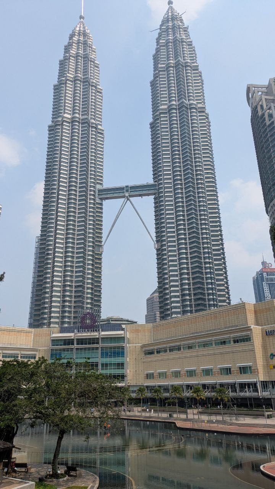
An der Bukit Bintang stehen die Einkaufszentren als Kette an derselben Kreuzung (24.08.). Starhill Gallery mit der schwarz-silbernen Facettenfassade, gegenüber fahrenheit88, dazwischen ein dreistufiger Springbrunnen und der Eingang zum Pavilion — alles im Umkreis von zweihundert Metern. Man wählt kein Haus aus, man geht die Straße hinunter und ist in allen. Wer wegen der Klimaanlage kommt, braucht ohnehin nur eins; wer bestimmte Läden sucht, sollte vorher wissen, in welchem sie sind, denn von außen sieht man das nicht.
Telegram 24.08. 06:06auf dieser Seite 24.08. 06:4136 Min
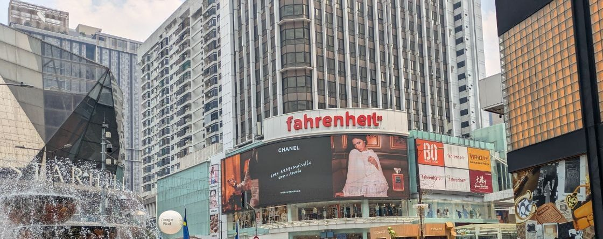
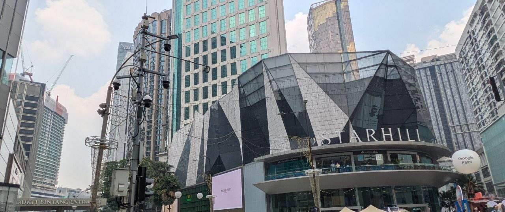
Im Einkaufszentrum saß ein Falter von der Größe einer Hand (24.08.). Erst auf dem polierten Boden zwischen den Läden, dann draußen auf der Fußmatte am Eingang: braungrau, mit einem hellen Band quer über beide Flügel und kurzen Zacken am Flügelrand. Er blieb sitzen, während die Leute an ihm vorbeigingen, und ließ sich aus einem halben Meter fotografieren.
Telegram 24.08. 06:06auf dieser Seite 24.08. 06:4136 Min
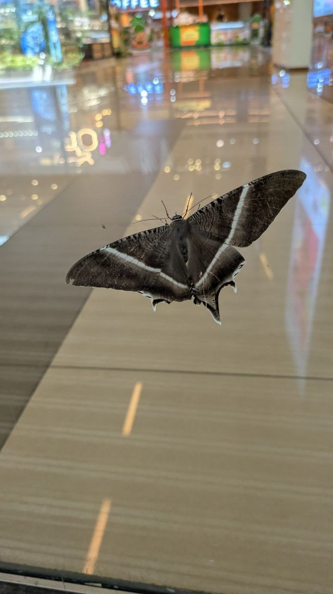
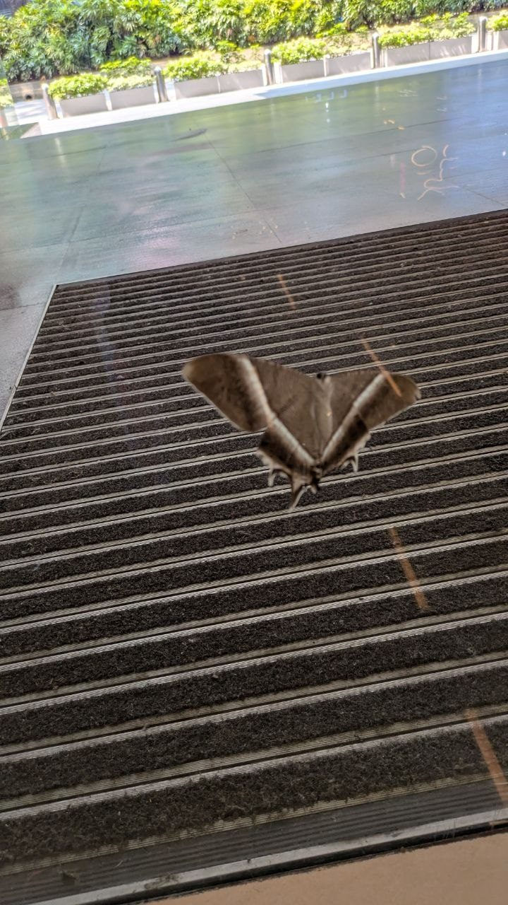
Zeichnung und Größe passen auf Lyssa zampa. Der Tropische Schwalbenschwanzfalter wird bis etwa 16 cm breit, ist nachtaktiv und tritt in Malaysia und Singapur saisonal in großer Zahl auf — meist zwischen Mai und August, wenn die Tiere massenhaft an beleuchteten Gebäuden landen. Das erklärt, warum einer mitten am Tag in einem Einkaufszentrum sitzt. Bestimmt haben wir ihn nicht, das ist nachgeschlagen.
Im Teich des Parks hinter Suria KLCC stehen Skulpturen im Wasser (24.08.). Ein Buckelwal steht senkrecht im flachen Wasser, den Kopf nach unten, daneben zwei Delfine und eine verspiegelte Kugel. Dahinter liegt ein hellblaues, flaches Becken, in das Kinder hineinwaten können. Der Blick geht über die Baumkronen auf die Hochhäuser ringsum, am Dach lesbar Traders Hotel und Lexis. Es ist derselbe Park, aus dem die Türme ganz aufs Bild passen — nur in die andere Richtung geschaut.
Telegram 24.08. 06:06auf dieser Seite 24.08. 09:13188 Min
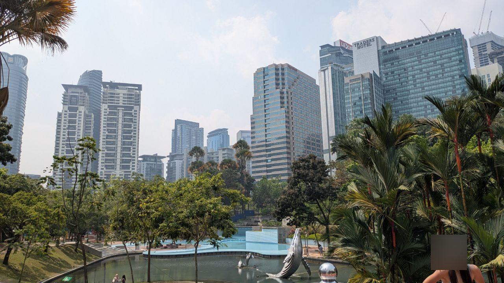
Am Fluss führt ein Steg durch die Innenstadt, ohne Verkehr und ohne Ampeln (24.08.). Der Fluss läuft dort in einem betonierten Bett und führte wenig Wasser; auf dem rechten Ufer liegt ein schmaler Holzsteg mit Metallgeländer, an den Rändern dicht bepflanzt, und er läuft geradeaus auf eine blaue Stahlbrücke zu. Über das andere Ufer hinweg stehen die Türme der Innenstadt, und zwischen ihnen eine weiße Kuppel. Wer im Zentrum ein Stück zu Fuß gehen will, kommt hier weiter, ohne an einer Kreuzung zu warten.
Telegram 24.08. 06:06auf dieser Seite 24.08. 09:13188 Min
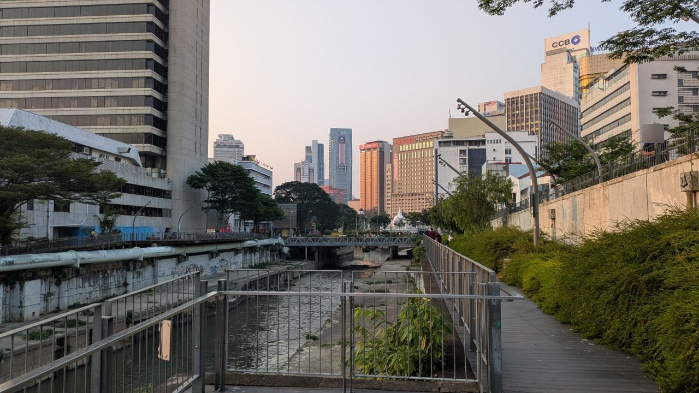
Der Bahnsteig einer Hochbahn-Station ist ein kostenloser Aussichtsplatz, und abends fällt die Sonne genau hinein (24.08.). Die Station am Hauptsitz der POS Malaysia liegt über der Straße; über die Gleise hinweg geht der Blick auf Baumkronen, ein Minarett und die Hügel dahinter, in die die Sonne fällt. Kein Aussichtsturm, kein Ticket außer der Fahrkarte, und man steht dort, solange man will — es kommt ohnehin gleich der nächste Zug.
Telegram 24.08. 06:06auf dieser Seite 24.08. 06:4136 Min
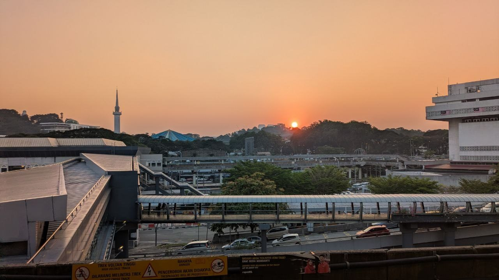
Am Tor zur Petaling Street steht Merdeka 118 direkt hinter dem Dach (24.08.). Das chinesische Tor mit rotem Schriftzug und Laternen, dahinter das Dach der Markthalle, und darüber ohne jeden Zwischenraum der spitze Glasturm. Alt und neu in einem Bild, und man muss dafür nichts weiter tun als unter dem Tor stehen und nach oben schauen. Die Busse der rapidKL fahren genau davor durch.
Telegram 24.08. 06:06auf dieser Seite 24.08. 06:4136 Min
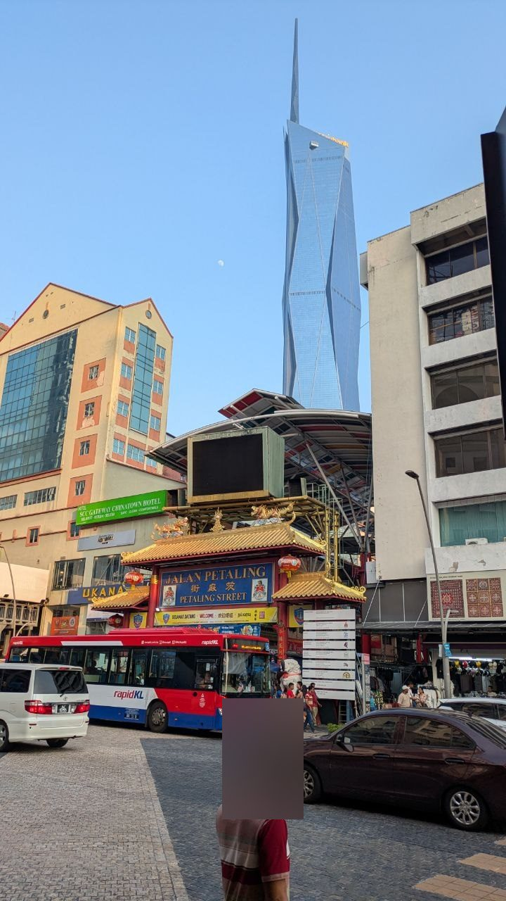
Der Waldpark Bukit Nanas hat abends zu, und sein Tor ist nicht das Tor zum Fernsehturm (24.08.). Um 19 Uhr stand am Bogen von Taman Eko Rimba KL ein verschlossenes Gitter, daran zwei Schilder: geschlossen bei schlechtem Wetter, und freitags ohnehin. Der Wald schließt um 18 Uhr. Der KL Tower steht auf demselben Hügel, hat aber einen eigenen Eingang an der Jalan Puncak, gut 500 Meter um den Hügel herum. Wer zum Turm will und dem Wald folgt, steht vor der falschen Schranke.
Telegram 24.08. 10:59auf dieser Seite 24.08. 11:1113 Min
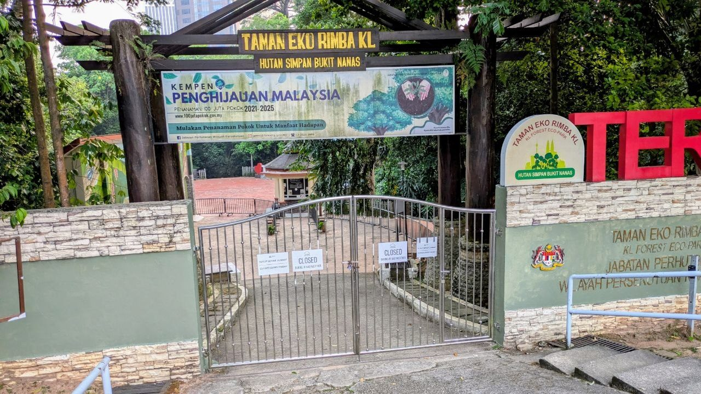
2 nachgeschlagene Notizen — nicht selbst geprüft
Vom Tor an der Jalan Puncak fährt alle 15 Minuten ein kostenloser Shuttle zur Turmlobby, von 8:00 bis 22:00. Der Turm selbst hat täglich von 9:00 bis 22:00 offen. Die Aussichtsplattform kostet für Ausländer RM 80 pro Erwachsener, die höher gelegene Sky Terrace RM 140. Nachgeschlagen, nicht selbst gefahren.
Abends hat von den Parks der Innenstadt der Waldpark als einziger zu. Der KLCC Park hinter Suria KLCC ist von 7:00 bis 22:00 offen, der TRX City Park zwei Kilometer weiter südöstlich von 8:00 bis 22:00. Der Bukit Nanas schließt um 18:00 und ist damit der einzige, der einen Abendspaziergang nicht mehr hergibt. Wer nach Feierabend ins Grüne will, geht nach Osten, nicht auf den Hügel.
Ankunft in Sandakan
In Sandakan wird über die Treppe aufs Vorfeld ausgestiegen (25.08.). Das Empfangsgebäude ist eine einzige lange Halle unter einem breiten braunen Vordach, und der Name steht in grünen Buchstaben oben auf der Dachkante: „Lapangan Terbang Sandakan". Eine Fluggastbrücke gibt es, unsere Maschine hat sie nicht benutzt — die Treppe kam an die Tür, und von dort geht es zu Fuß über den Asphalt zur Ankunft. Das sind ein paar Dutzend Meter ohne jeden Schatten, und mittags steht die Sonne senkrecht darüber.
Telegram 25.08. 04:44auf dieser Seite 25.08. 04:5410 Min
Der Schriftzug „I ♥ SANDAKAN" steht am Hafen, und man kommt nicht an ihn heran (25.08.). Die bunten Buchstaben stehen an der Kaikante der Hafenpromenade, dahinter liegen die Bucht und die Hügel der Gegenseite. Davor steht allerdings über die ganze Breite eine Reihe schwarzer Gittertore, sodass man weder zwischen die Buchstaben treten noch sich davorstellen kann; auf jedem Bild von der Promenade aus steht das Gitter mit darin. Wenige Meter rechts daneben hängt ein gelber Bilderrahmen, und durch den geht der Blick frei auf die See.
Telegram 25.08. 04:44auf dieser Seite 25.08. 04:5410 Min
„Elopura" auf dem gelben Rahmen ist der alte Name der Stadt. Der britische Resident William Burges Pryer gründete die Siedlung am 21. Juni 1879 neu und nannte sie Elopura, „schöne Stadt". Der Name hielt sich nur wenige Jahre: die einheimische Bevölkerung blieb bei Sandakan, und dabei ist es geblieben. Als Name eines Stadtteils lebt Elopura bis heute weiter. Nachgeschlagen, nicht vor Ort erfahren.
Essen
Ein Mamak-Stand in Mersing verlangt für ein volles Essen RM 6,50 bis RM 11,00, ein Frühstück kostet RM 3,50 (17.08.). Zahlen von der Anzeigetafel, nicht geschätzt: Nasi Goreng, Mee Goreng, Kuey Teow Goreng und Mehoon Goreng je RM 6,50; mit Hähnchen RM 10,00, mit Rind RM 10,50, mit Ziege RM 11,50. Reis pur RM 2,50, Gemüse RM 2,00, ein Spiegelei RM 1,50. Roti Canai RM 1,50, Tosai RM 2,00, Capati RM 2,50. Getränke RM 1,50 bis RM 3,50, Teh Tarik heiß RM 2,00 und kalt RM 2,50 — kalt kostet hier überall 50 Sen mehr. Damit liegt ein Frühstück aus Roti Canai und Teh Tarik bei RM 3,50 (rund 0,70 €) und ein Abendessen für vier mit je einem Teller und einem Getränk bei RM 34 bis RM 54 (7 bis 11 €). Zum Mitnehmen kommen 20 Sen je Packung dazu; das steht als einzige Fußnote auf der Tafel.
Telegram 17.08. 11:19auf dieser Seite 17.08. 11:4224 Min
2 nachgeschlagene Notizen — nicht selbst geprüft
„Steht auf der vegetarischen Seite" und „ist vegetarisch" sind an einem Mamak-Stand nicht dasselbe. Ohne Fleisch auf der Karte sind Nasi Goreng, Mee Goreng, Kuey Teow Goreng, Mehoon Goreng Biasa, Sayur-Sayuran, Telur Goreng, Telur Dadar und die ganze Roti-Reihe (Canai, Planta, Pisang, Bom, Tisu, Naan, Capati, Tosai, Puri Kosong). Zwei Dinge stehen aber nirgends auf der Tafel: Sambal enthält fast immer Belacan, also Garnelenpaste, und der Wok wird zwischen den Gerichten nicht gewaschen. Wer streng vegetarisch isst, bestellt „tanpa sambal" und nimmt eher Roti und Tosai als Gebratenes — die kommen von der Platte, nicht aus dem Wok.
Sieben Wörter genügen, um jede Mamak-Karte selbst zu lesen. Ayam Hähnchen · daging Rind · kambing Ziege · ikan Fisch · telur Ei · sayur Gemüse · goreng gebraten. „Nasi goreng ayam" ist damit gebratener Reis mit Hähnchen, „mee goreng" gebratene Nudeln ohne Zusatz. Kosong heißt leer, also ohne Füllung, biasa einfach, panas heiß und sejuk kalt — die letzten beiden stehen über den zwei Preisspalten bei den Getränken.
Bezahlen
Im Bus von JB Sentral nach Larkin geht kontaktlos bezahlen, mit Kreditkarte und mit Google Pay (17.08.). Beides wurde angenommen, ohne Vorbereitung und ohne lokale Verkehrskarte. Das ist die praktisch wichtigste Erfahrung des Tages: für den Weg vom Grenzgebäude zum Fernbusbahnhof braucht man weder Ringgit in bar noch eine App, und der Bus ist deutlich billiger als das Taxi, zu dem einem sonst geraten wird.
Telegram 17.08. 04:41auf dieser Seite 17.08. 05:4666 Min
In Malaysia bleibt Bargeld trotzdem Pflicht — aber für andere Dinge. Behördengebühren und kleine Stände nehmen es nicht anders. Fest eingeplant für Tioman: RM105 Marine-Park-Gebühr am Fährschalter in Mersing (Erwachsene RM30, Kinder 6–12 RM15, Quelle: malaysisches Fischereiministerium) und RM60 Touristensteuer in der Unterkunft. Zusammen rund 35 Euro, bar, vor dem Einsteigen.
„Wechselstube schlägt Geldautomat" — das galt bei uns nicht (17.08.). Der Satz stand hier bis zum 17. August als Empfehlung: in Malaysia falle am Automaten eine Fremdkartengebühr an, in der Wechselstube nicht. Am selben Tag kam in Mersing mit einer Reisekreditkarte Geld heraus, ohne jede Gebühr. Die Regel hängt also nicht am Land, sondern an der Karte — und wer eine ohne Auslandsentgelt hat, sollte sich davon keinen Umweg aufschwatzen lassen. Wechselstuben gibt es trotzdem, etwa im Terminal von Larkin Sentral in Johor Bahru (Tajmuhabath, 10:00–20:00); mit Bargeld aus Deutschland sind sie der bessere Weg als der Automat, mit der richtigen Karte nicht.
In Mersing stehen fünf Banken mit Geldautomat dicht beieinander im Ortskern. Maybank, Bank Rakyat und Hong Leong Bank an der Jalan Ismail, der Hauptstraße; Public Bank und Bank Simpanan Nasional eine Straße weiter an der Jalan Sulaiman. Alle fünf liegen innerhalb von 250 Metern, jede Filiale hat ihren Automaten im Vorraum. Wichtig, weil die Marine-Park-Gebühr für Tioman bar am Fährschalter fällig wird und Mersing der letzte Ort davor ist. (Standorte am 17.08. aus OpenStreetMap geholt, nicht vor Ort geprüft.)
Hier stand bis zum 17.08. zusätzlich der Rat, mit einer ausländischen Karte zu Maybank oder Public Bank zu gehen, weil Bank Rakyat und Bank Simpanan Nasional auf malaysische Karten ausgelegt seien. Das war nicht gemessen, sondern angenommen — und es war falsch. Geld kam an einem Automaten der Bank Simpanan Nasional heraus, also genau bei der Bank, von der hier abgeraten wurde. Der Satz ist deshalb gestrichen.
Und der Irrtum wäre teuer geworden, weil er nach vorn wirkt: auf Tioman gibt es genau einen Geldautomaten, und es ist eine BSN (in Tekek, am Flugfeld). Wer dem alten Rat geglaubt hätte, wäre mit der Erwartung auf die Insel gefahren, dort gar nicht an Bargeld zu kommen — und hätte in Mersing entsprechend viel abheben oder eine Wechselstube suchen müssen. BSN ist die malaysische Post-Sparkasse; sie steht in kleinen Orten, in denen keine der großen Banken mehr sitzt. Das macht sie für Reisende eher wichtiger als unwichtiger.
2 nachgeschlagene Notizen — nicht selbst geprüft
Trinkgeld: in Singapur und Malaysia nirgends. Der Grund steht auf der Rechnung.
Singapur: 10 % Service Charge + 9 % GST, auf der Speisekarte als ++ hinter dem Preis
angekündigt — rund 20 % kommen also ohnehin oben drauf. Malaysia: 10 % Service Charge + 6 %
SST auf Essen und Getränke. Im Hawker Centre und am Straßenstand gibt es weder das eine noch
das andere, dort zahlt man den Preis, der dransteht. Taxifahrer erwarten nichts —
ComfortDelGro schreibt selbst auf seiner Seite „you are not expected to tip your driver".
Am Flughafen Changi darf das Personal gar nichts annehmen.
Achtung bei alten Reiseführern: die Steuersätze sind frisch. Singapurs GST ist erst seit dem 01.01.2024 bei 9 % (vorher 8 %). In Malaysia stieg die allgemeine Dienstleistungs- steuer 03/2024 auf 8 %, Essen und Getränke blieben bei 6 % — auch nach der Erweiterung 07/2025. Wer 8 % für Restaurants liest, liest eine falsche Zahl.
Offen, kommt noch: ob Karte auch beim Fährticket, in Läden auf Tioman und bei den Touren in Sabah geht.
Strom, Internet, Telefon
2 nachgeschlagene Notizen — nicht selbst geprüft
Bahrain, Singapur und Malaysia haben alle drei Typ G — den britischen Stecker mit drei flachen Pins. Ein deutscher Schuko passt in keinem der drei Länder in die Wand. Spannung 230 V (Bahrain, Singapur) bzw. 240 V (Malaysia), überall 50 Hz. Ohne Adapter sind es drei Wochen Powerbank, und es fällt erst am ersten Abend auf, wenn alle vier Geräte leer sind. Adapter gibt es im Duty-free in Bahrain, in Changi und in jedem malaysischen Elektronikladen.
Am Flughafen Bahrain sind hinter der Sicherheitskontrolle Ladepunkte in die Sitzreihen
an den Gates eingebaut, USB direkt am Platz — dafür braucht es keinen Adapter. Davor, im
öffentlichen Bereich, gibt es nur normale Steckdosen. WLAN BIA Free WiFi, ohne Anmeldung.
Im malaysischen Fernbus sitzt eine USB-Buchse am Platz (17.08.). Zwei USB-A-Anschlüsse, eingelassen in die Seitenverkleidung unter der Armlehne, also unterhalb der Sitzfläche und nicht auf Augenhöhe — man findet sie nur, wenn man danach sucht. Ein eigenes Kabel gehört deshalb ins Handgepäck und nicht in den Koffer im Laderaum. Gemeldet wurde die Buchse mit Foto aus einem Bus ab Larkin Sentral; welche Linie es genau war, steht nicht fest.
Telegram 17.08. 06:21auf dieser Seite 17.08. 06:3817 Min
Im Fernbus hängen Überwachungskameras, und die Beschwerdenummer klebt an der Frontscheibe (17.08.). Zwei Kuppelkameras in der Decke über dem Mittelgang, dazu ein Aufkleber des malaysischen Verkehrsministeriums mit „Talian Aduan MOT", einer kostenlosen Nummer und einem QR-Code. Wer sich fragt, wie reguliert der malaysische Fernbusverkehr ist: so weit, dass die Aufsichtsbehörde ihre Beschwerdestelle im Blickfeld jedes Fahrgastes anbringen lässt. Für Reisende ist das eher beruhigend als bürokratisch.
Telegram 17.08. 09:37auf dieser Seite 17.08. 09:5013 Min

CelcomDigi ließ sich online nicht kaufen. Der Bestellvorgang brach reproduzierbar bei der Adresseingabe ab. Am Schalter mit Pass im Original geht es; Kaufmöglichkeiten in Kuala Lumpur (Pavilion, Suria KLCC) und am Flughafen KLIA.
Singtel hi!Tourist gibt es nur drei Stück pro Pass. Danach ist der Pass ausgereizt und die nächste Karte muss auf jemand anderen laufen.
Die Singapur-eSIM trägt in Malaysia — die Tabelle hatte recht, nicht der Kleingedruckte
(17.08.). Der Tarif ist Singtel hi!Tourist eSIM, S$15 (rund 10 Euro), 30 Tage, 500 GB,
und die Länderliste auf der Verkaufsseite nennt neben Singapur ausdrücklich Malaysia,
Indonesien, Thailand und Hongkong. Genau das war vorher die offene Frage: dieselben AGB
beschreiben unter 2.3 nur „local calls, local SMS, local data" — also eine reine
Singapur-Karte. Es gilt die Ländertabelle. Gekauft und aktiviert wird sie vor der Reise
online, installiert per QR-Code; registriert wird sie auf den Pass, und mehr als drei Karten
nimmt ein Pass nicht.
Telegram 17.08. 10:58auf dieser Seite 17.08. 11:024 Min
Was der Tarif nicht kann: telefonieren. Auf den Touristenkarten sind Gespräche gesperrt, es laufen nur Daten. Für eine erreichbare Telefonnummer braucht die Gruppe also entweder eine deutsche Karte im Roaming oder eine lokale Karte auf einen zweiten Pass. Wer eine deutsche Behörde oder eine Bank anrufen muss, plant das mit ein — über Daten geht das nur, solange die Gegenstelle einen Messenger nimmt.
Offen, kommt noch: wie das Netz auf Tioman und in Sabah trägt. Auf der Insel ist es erfahrungsgemäß dünn, und 500 GB nützen nichts, wo kein Mast steht.
Was wir vorher falsch geplant hatten
Der nützlichste Teil für andere, weil diese Fehler nichts mit uns zu tun haben.
Der Internationale Führerschein ist nur in Deutschland zu bekommen. Die deutschen Auslandsvertretungen stellen ihn ausdrücklich nicht aus. Malaysia verlangt ihn zusätzlich zum deutschen Führerschein, die Mietwagenfirmen ebenfalls; ohne ihn 300–1.000 RM Bußgeld. Wer ihn zu Hause vergisst, kann für die ganze Reise nicht selbst fahren. Ersatz sind Tagestouren mit Fahrer — für uns kein großer Verlust, weil nur ein Ziel überhaupt daran hing.
„Ein Anbieter kann nicht" heißt nicht „geht nicht". Weil ComfortDelGro Fahrten über die Grenze nicht mehr vorbuchen lässt, stand in unserer Planung tagelang „über die Grenze ist nichts buchbar". Grab fährt seit Mai 2026 mit eigener Lizenz. Nach einer Absage die Gattung nachfragen, nicht die Absage verallgemeinern.
Der eigene Reiseplan war älter als die Buchungen. Unser Zeitplan behauptete sechs Tage lang, eine Strecke sei nicht gebucht — das Ticket lag seit 18 Minuten nach seiner Erstellung im Ordner. Vor jeder Aussage über die Reise den Ordner mit den Belegen lesen, nie die Zusammenfassung.
Der Abfahrtshafen stand in der Bestellmail anders als auf dem Ticket. Die Mail sagte Tanjung Gemok, die Bordkarte sagt Mersing — 40 Kilometer auseinander, zwei verschiedene Bundesstaaten, und ein ganzer Reisetag hängt daran. Es gilt das Ticket, nicht die Bestellung.
Chronik
| Datum | Wo | Steht oben unter |
|---|---|---|
| 15.08. | Frankfurt → Bahrain (Zwischenstopp) → Singapur | Strom, Internet, Telefon |
| 16.08. | Singapur, Little India · Gardens by the Bay | Unterwegs in Singapur |
| 17.08. | Grenze nach Johor Bahru · Larkin Sentral · Bus nach Mersing | Grenze · Bezahlen |
| 18.–21.08. | Tioman | — |
| 22.–24.08. | Kuala Lumpur | — |
| 25.–28.08. | Sandakan, Sabah | — |
| 29.08.–03.09. | Kota Kinabalu | — |
| 04.–05.09. | Kudat, Tip of Borneo | — |
| 05.–07.09. | Singapur → Bahrain → Frankfurt | — |
Wer das hier schreibt
Wir sind zu viert unterwegs — drei Wochen Singapur, Halbinsel, Borneo. Getippt hat diese Seite niemand von uns. Jens schickt unterwegs eine Telegram-Nachricht, wenn etwas funktioniert hat; den Rest macht Otto, ein Assistent auf einem Mini-PC in einem Keller in Karlstein am Main: nachsehen, einordnen, gegen die bisherigen Notizen halten, auf private Daten prüfen, die Seite neu bauen, veröffentlichen.
Das ist kein Kunststück nebenbei, sondern der Beruf. Jens Laufer arbeitet als Forward Deployed Engineer — er bringt Modelle aus der Demo dorthin, wo echte Daten, echte Abläufe und echte Ausfälle sind — und die Hälfte davon ist inzwischen Harness Engineering: nicht das Modell bauen, sondern den Aufbau darum, in dem es unbeaufsichtigt arbeitet. Diese Reise ist der Härtetest. Was sich nicht von einem Telefon aus beauftragen lässt, findet drei Wochen lang nicht statt.
Eine Anmerkung gehört hierher, sonst verspricht die Seite mehr, als sie hält. Jens liest jede Fassung gegen, und sein häufigster Einwand ist die Sprache: sie klingt ihm immer noch zu sehr nach KI. Zu glatt, zu viele selbst gebaute Wörter, Sätze, die wie Text klingen und nicht wie jemand, der einem etwas erzählt. Er ist da streng — strenger als bei allem anderen auf dieser Seite. Das steht hier, weil eine Seite, die zeigen soll, was so ein Aufbau kann, auch sagen muss, wo er noch nicht gut ist.
Wie der Aufbau funktioniert, mit allen Zahlen → Jens auf LinkedIn